01Що таке бродіння: баланс електронів
Шість процесів, які традиційно називають «бродіннями», біохімічно поділяються на дві різні групи. Спиртове, молочнокисле, пропіоновокисле й маслянокисле бродіння — справжні бродіння. Це анаеробні процеси, у яких органічна речовина водночас віддає й приймає електрони: NADH, що утворився в гліколізі, окиснюється назад до NAD⁺ за рахунок проміжного продукту самої клітини (пірувату, ацетальдегіду, ацетил-КоА, фумарату) або виділення H₂. Оцтовокисле й лимоннокисле «бродіння» — це аеробні неповні окиснення («окиснювальні бродіння»). Кінцевим акцептором електронів у них є O₂, а бродінням їх називають лише в історичному й технологічному сенсі.
Усі шість процесів починаються спільним «стовбуром» (гліколіз) і розходяться у вузлі пірувату. Від того, куди спрямовується піруват, залежить кінцевий продукт, спосіб регенерації NAD⁺ і вихід енергії: від 1 АТФ на молекулу глюкози (гетероферментативне молочнокисле бродіння, Zymomonas) до приблизно 3–4,5 АТФ (маслянокисле й пропіоновокисле). Аеробне дихання дає близько 32 АТФ. Бродіння вивільняє лише ~6–9 % вільної енергії глюкози, тому бродильники переробляють величезні кількості субстрату й виділяють у середовище багаті на енергію продукти. Саме на цьому тримаються хлібопечення, виноробство, сироваріння, виробництво оцту й лимонної кислоти (близько 2–2,3 млн т на рік), а також важливі процеси в організмі людини: робота м’язів і еритроцитів, живлення клітин товстої кишки коротколанцюговими жирними кислотами.
Оберіть «колію» — побачите фермент вузла, кофактор, продукт, вихід АТФ і ставлення до кисню. Крапки — молекули, що біжать по шляху.
1.1Строге біохімічне й широке технологічне значення терміна
Луї Пастер 1876 року назвав бродіння «la vie sans air» — «життям без повітря». Згодом це визначення визнали неточним: існує анаеробне дихання, а деякі бродильники переносять кисень [1]. Сучасне мінімальне визначення таке: бродіння — це катаболізм, у якому органічні сполуки є водночас донором і акцептором електронів [1]. Підручник OpenStax формулює це так: бродіння використовує органічну молекулу як кінцевий акцептор електронів для регенерації NAD⁺ з NADH і не залучає електронтранспортного ланцюга. Анаеробне дихання, натомість, передає електрони через такий ланцюг на неорганічні акцептори: NO₃⁻, SO₄²⁻, Fe³⁺, CO₂. Іншими словами, при бродінні акцептор ендогенний (утворюється в самій клітині), а при диханні екзогенний.
У промисловості «ферментацією» називають будь-який великомасштабний мікробіологічний процес, незалежно від типу метаболізму. Звідси й термінологічна плутанина. Оцтовокислі бактерії лише частково окиснюють спирти й цукри та виділяють продукти в середовище. Ці процеси в літературі прямо названо «окиснювальним бродінням оцтовокислих бактерій» (AAB oxidative fermentation), хоча електрони в них ідуть через убіхінон і термінальні оксидази на кисень [2]. Синтез лимонної кислоти грибом Aspergillus niger так само є аеробним процесом: короткочасна відсутність кисню негайно зупиняє продукцію [3]. Тому в цій статті використано дворівневу схему: до справжніх (анаеробних) бродінь належать спиртове, молочнокисле, пропіоновокисле й маслянокисле, а до окиснювальних «бродінь» у широкому технологічному сенсі — оцтовокисле й лимоннокисле.
Оберіть організм або процес — побачите, яким є кінцевий акцептор електронів і до якого типу належить процес.
Ще один важливий нюанс: не слід визначати бродіння за способом утворення АТФ [1]. У частини бродильників працюють електронтранспортні ланцюги, і в одного з організмів так синтезується до третини АТФ. Бродіння дуже поширене: з приблизно 8300 проаналізованих прокаріотів понад чверть здатні до нього. Вони використовують 46 субстратів і утворюють 55 кінцевих продуктів, приблизно в 300 комбінаціях [1].
Від «життя без повітря» до флавінової біфуркації. Клацніть подію — прочитайте подробиці.
Історично саме вивчення бродіння започаткувало біохімію. У 1897 р. Едуард Бухнер показав, що безклітинний дріжджовий сік зброджує цукор, і 1907 р. отримав за це Нобелівську премію з хімії. Фосфорний ефір Гардена–Янга виявився фруктозо-1,6-бісфосфатом; Гарден поділив Нобелівську премію 1929 р. з фон Ейлером-Хельпіном «за дослідження бродіння цукру й ферментів бродіння». Клюйвер і Донкер (1926) сформулювали принцип «єдності біохімії»: «від слона до маслянокислої бактерії — усе те саме». Цей принцип добре видно в порівнянні бродінь: дріжджі й м’язи людини використовують той самий гліколіз і різняться лише тим, як повертають NAD⁺.

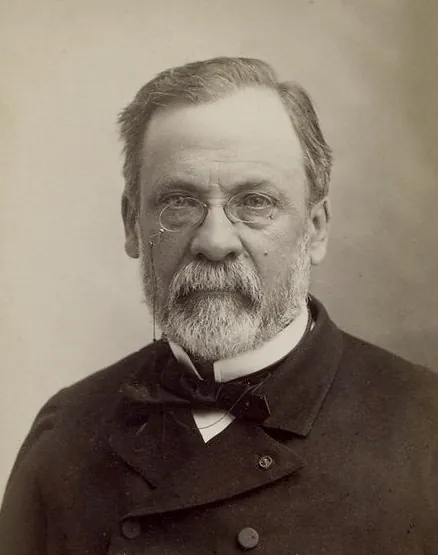

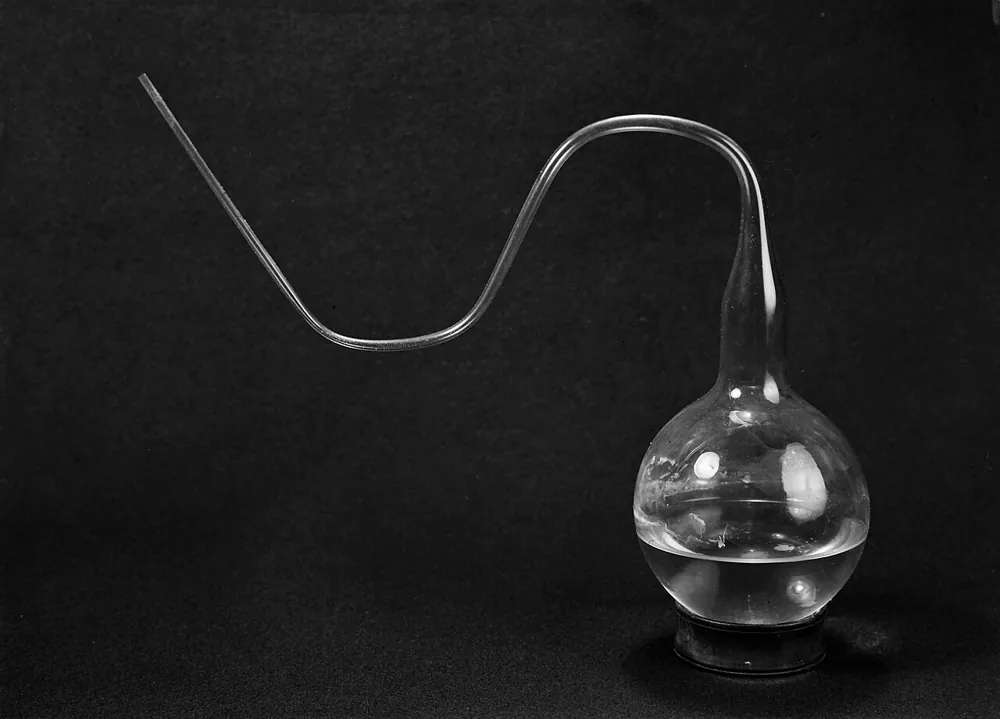

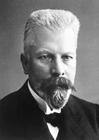

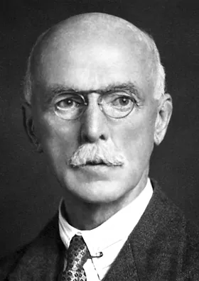

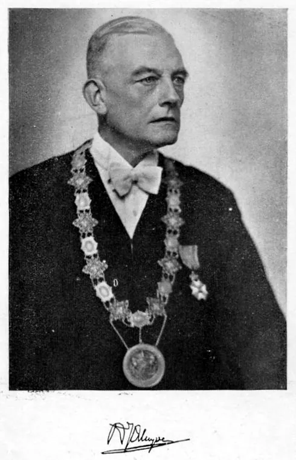
1.2Регенерація NAD⁺ — центральна мета будь-якого бродіння
На шостому етапі гліколізу гліцеральдегід-3-фосфатдегідрогеназа окиснює гліцеральдегід-3-фосфат, а NAD⁺ відновлюється до NADH. Без постійного поповнення NAD⁺ гліколіз зупиняється. Сумарне рівняння гліколізу:
Аеробна клітина віддає електрони з NADH дихальному ланцюгу. Бродильник мусить відновити один зі своїх метаболітів: піруват (лактатдегідрогеназа), ацетальдегід (алкогольдегідрогеназа), ацетил-КоА і його похідні (маслянокисле бродіння), оксалоацетат і фумарат (пропіоновокисле). Інший варіант — скинути електрони на протони з утворенням H₂ через фередоксин і гідрогеназу. Тому продукти бродіння завжди утворюють окисно-відновну пару: частина вуглецю окиснюється (CO₂, ацетат, лактат, бутират), частина відновлюється (етанол, лактат), а сумарно електрони не втрачаються на зовнішній акцептор.
Добре це видно на змішаному кислотному бродінні Escherichia coli. Клітина утворює суміш сукцинату, форміату, ацетату, лактату й етанолу. Перетворення ацетил-КоА на етанол ферментом AdhE регенерує дві молекули NAD⁺, а розщеплення тіоефірного зв’язку ацетил-КоА з утворенням ацетату АТФ не споживає. Через це етанол не може бути єдиним кінцевим продуктом дикого типу E. coli [4]. Звідси загальне правило: кожна молекула ацетил-КоА, перетворена на ацетат, дає додатковий АТФ, але не окиснює NADH; кожна молекула, перетворена на етанол, окиснює 2 NADH, але АТФ не дає. Клітина постійно балансує між енергією й окисно-відновною рівновагою.
Модель клітини: гліколіз «заповнює» візочки електронами (NADH), а вибраний шлях їх розвантажує. Змініть акцептор — і подивіться на потік гліколізу та накопичення АТФ.
Оберіть реакцію й змінюйте коефіцієнти кнопками. Лічильник покаже, де баланс атомів порушено. Є і приклад «помилкового» рівняння, яке трапляється в посібниках.
1.3Субстратне фосфорилювання та «додаткові» способи запасання енергії
У класичних бродіннях АТФ утворюється в кількох реакціях субстратного фосфорилювання: фосфорильна група переходить із макроергічної сполуки безпосередньо на АДФ. У гліколізі це 1,3-бісфосфогліцерат (фосфогліцераткіназа) і фосфоенолпіруват (піруваткіназа). В анаеробів до них додаються ацилфосфати: ацетилфосфат (ацетаткіназа) і бутирилфосфат (бутираткіназа), які утворюються з тіоефірів ацил-КоА фосфотрансацетилазою та фосфотрансбутирилазою. Наприклад, перетворення глюкози на бутират традиційно дає 3 АТФ шляхом субстратного фосфорилювання: 2 у гліколізі і 1 через бутирилфосфат [5]. Кандлер показав, що в молочнокислих бактерій кожен із двох механізмів перетворення пірувату на ацетат дає 1 моль АТФ через ацетилфосфат [6].
За останні десятиліття стало зрозуміло, що бродильники вміють запасати й набагато менші «порції» енергії. Бакель і Тауер описали флавінову біфуркацію електронів як третій спосіб запасання енергії поряд із субстратним і електронтранспортним фосфорилюванням [7]. Мембранні комплекси Rnf та Ech перетворюють енергію відновленого фередоксину на градієнт H⁺ або Na⁺ [8]. Виведення лактату разом із протонами («модель рециклінгу енергії») також створює протонний градієнт. У Streptococcus cremoris вихід лактату підживлював мембранний потенціал на 51 мВ і давав щонайменше 12 % чистого енергетичного виграшу [9]. При pH 6,8 виграш сягав майже двох еквівалентів АТФ на молекулу лактози [10].
Propionigenium modestum отримує всю енергію для росту з перетворення сукцинату на пропіонат (ΔG°′ = −20,6 кДж/моль). Цієї енергії замало для субстратного фосфорилювання, тож мембранна метилмалоніл-КоА-декарбоксилаза спрягає декарбоксилювання з перенесенням Na⁺, а Na⁺-залежна АТФ-синтаза синтезує АТФ. Автори назвали це «новим способом синтезу АТФ у живих клітинах» [11]. Мінімальний біологічний «квант» енергії становить близько −15…−20 кДж/моль на один транслокований іон, тобто ⅓–¼ АТФ. Тому стара чітка межа «бродіння = лише субстратне фосфорилювання» сьогодні розмита.
1.4Піруват — головне перехрестя, на якому типи бродіння розходяться
Бродильники розщеплюють гексози трьома основними шляхами. Шлях Ембдена–Мейєргофа–Парнаса (ЕМП, гліколіз) дає 2 АТФ на глюкозу. Шлях Ентнера–Дудорова (ЕД) дає лише 1 АТФ, зате для того самого потоку потребує в кілька разів менше ферментного білка. Тому анаероби, яким бракує енергії, переважно користуються ЕМП, а ЕД частіше трапляється у факультативних анаеробів та аеробів [12]. Фосфокетолазні шляхи характерні для гетероферментативних молочнокислих бактерій і біфідобактерій [6].
Після утворення пірувату (а далі ацетил-КоА) кожен тип бродіння «вибирає» свій фермент-розв’язку [1, 4]:
| Фермент вузла пірувату | Кофактор | Тип процесу | Що відбувається з піруватом |
|---|---|---|---|
| Лактатдегідрогеназа (ЛДГ) | NADH | Молочнокисле | Відновлюється до лактату |
| Піруватдекарбоксилаза + алкогольдегідрогеназа | ТПФ, Mg²⁺, Zn²⁺, NADH | Спиртове | Декарбоксилюється до ацетальдегіду, який відновлюється до етанолу |
| Піруват:фередоксин-оксидоредуктаза (ПФОР) | ТПФ, Fe–S, фередоксин | Маслянокисле (клостридії) | Окиснюється до ацетил-КоА + CO₂; електрони йдуть на фередоксин і H₂ |
| Піруват-форміат-ліаза (ПФЛ) | гліцильний радикал | Змішане кислотне (E. coli) | Розщеплюється на ацетил-КоА + форміат |
| Метилмалоніл-КоА:піруват-транскарбоксилаза | біотин | Пропіоновокисле | Карбоксилюється до оксалоацетату, вступає в цикл Вуда–Веркмана |
| Піруватдегідрогеназа + піруваткарбоксилаза → цитратсинтаза | ТПФ, ліпоат, NAD⁺, АТФ, Mg²⁺ | Лимоннокисле (аеробне) | Два пірувати дають ацетил-КоА та оксалоацетат, які конденсуються в цитрат |
Кофактори ПФЛ і ПФОР наведено за стандартними підручниковими даними; у використаних джерелах їх детально не розглядали.

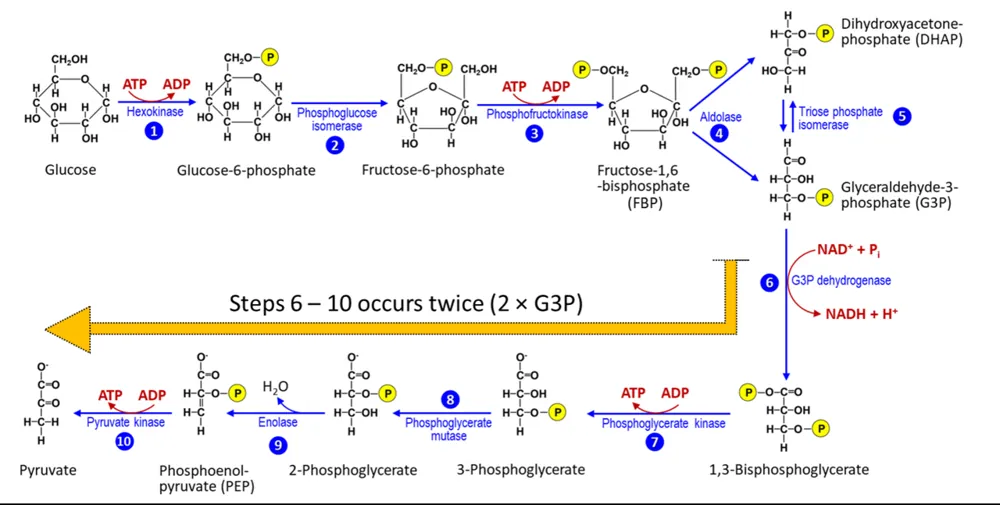
02Енергетика: чому бродильники «марнотратні»
Повне окиснення глюкози до CO₂ і H₂O вивільняє ΔG°′ ≈ −2870 кДж/моль [13]. Перетворення глюкози на 2 лактати дає лише ≈ −185 кДж/моль [13]; навчальні ресурси наводять −197 кДж/моль. Спиртове бродіння вивільняє близько −235 кДж/моль за навчальним значенням або −267 ± 13 кДж/моль за розрахунком у фізіологічних умовах [14]. Отже, бродіння вивільняє лише приблизно 6–9 % енергії глюкози, а решта залишається в продуктах: етанолі, лактаті, бутираті. Зазвичай бродіння дає 2–5 АТФ на глюкозу, тоді як аеробне дихання — близько 32.
Ефективність можна порівняти, взявши стандартну вартість синтезу АТФ +30,5 кДж/моль. За нашим розрахунком, гомоферментативне молочнокисле бродіння зберігає в АТФ 2 × 30,5 / 185 ≈ 33 % вивільненої енергії, спиртове 2 × 30,5 / 235 ≈ 26 %, аеробне дихання 32 × 30,5 / 2870 ≈ 34 %. Отже, бродіння не гірше за дихання в тому, яку частку вивільненої енергії воно запасає. Проблема в тому, що з молекули глюкози воно вивільняє дуже мало. Бакель додає, що в реальних клітинних умовах синтез одного АТФ коштує близько 66 кДж/моль в анаеробів (≈ 76 в аеробів). За такої «ціни» −185 кДж мали б дати близько 2,4 АТФ, а утворюється лише 2. Надлишок розсіюється як тепло й робить реакцію практично незворотною [13].
Оберіть процес і змініть вихід АТФ. Лічильник покаже частку енергії, яку клітина запасає, і кількість молекул глюкози, потрібних, щоб зрівнятися з диханням.
Практичний наслідок. Щоб отримати стільки ж АТФ, скільки аероб, гомоферментативному бродильнику треба переробити приблизно в 15 разів більше глюкози (32 / 2 — наш розрахунок). Саме тому бродильники швидко закисляють середовище й накопичують продукти у великих кількостях. Для людини це основа консервування їжі та промислового синтезу.
03Спиртове бродіння
Спиртове бродіння перетворює гексози на етанол і CO₂. NAD⁺ регенерується відновленням ацетальдегіду, утвореного декарбоксилюванням пірувату [15]. Класичні збудники — дріжджі Saccharomyces cerevisiae і Schizosaccharomyces pombe, які зброджують цукор навіть за наявності кисню. Kluyveromyces lactis утворює етанол лише в анаеробних умовах, а за наявності O₂ повністю окиснює піруват.

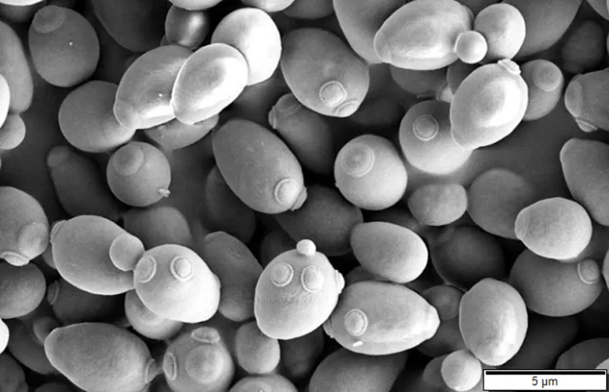

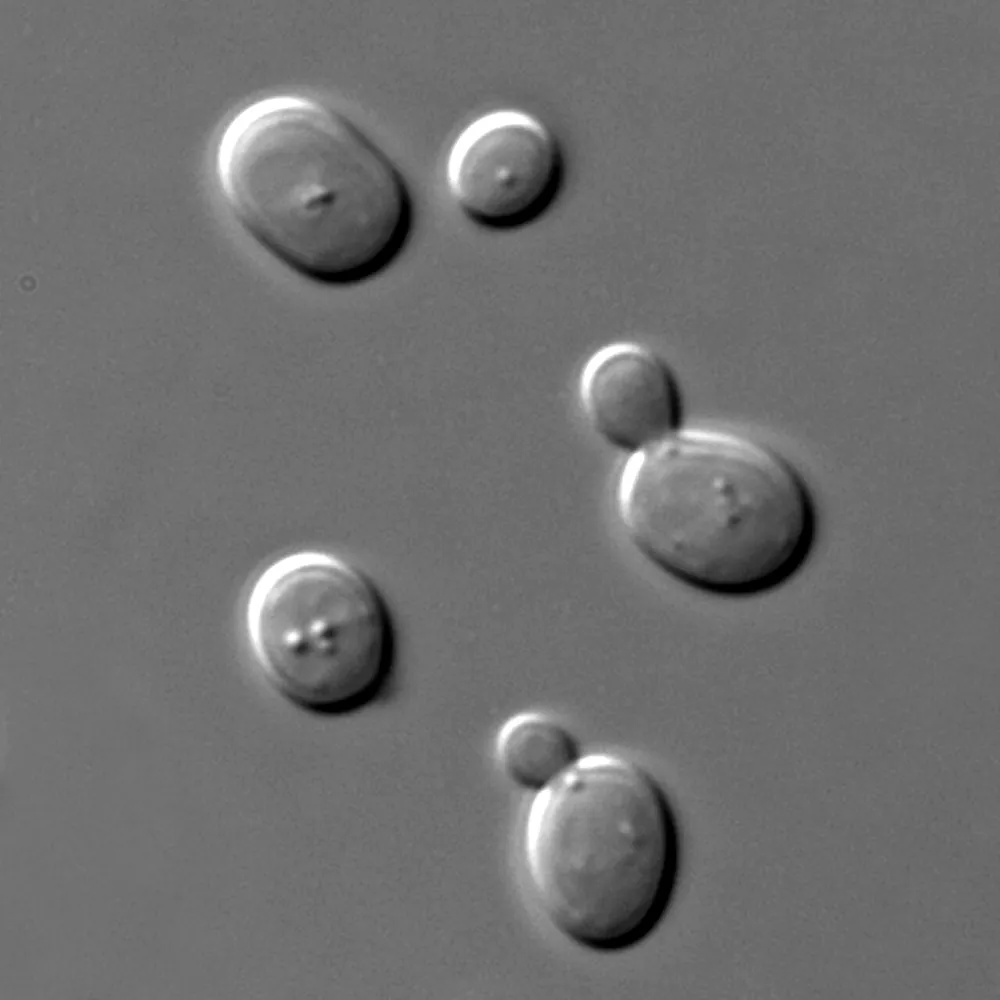

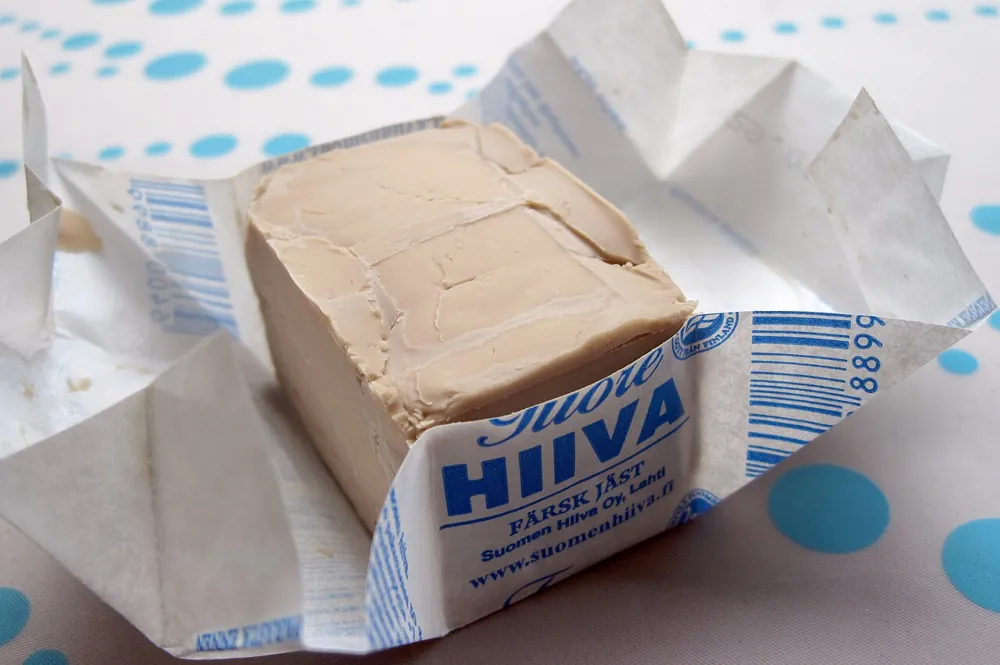
3.1Принцип і збудники
Серед бактерій класичний спиртовий бродильник — Zymomonas mobilis, яку використовують у мексиканському напої пульке й виділили з африканського пальмового вина. Вона розщеплює глюкозу шляхом Ентнера–Дудорова, отримує лише 1 АТФ на глюкозу, проте дає до ~97 % теоретичного виходу етанолу й утворює приблизно на 40 % менше біомаси на грам субстрату, ніж Saccharomyces [15]. Етанол як один із кількох продуктів утворюють також Leuconostoc (гетероферментативне молочнокисле бродіння), Escherichia (змішане кислотне) та Enterobacter (2,3-бутандіолове).
Спиртове бродіння трапляється навіть у хребетних. Карась (Carassius carassius) і золота рибка (C. auratus) за аноксії перетворюють піруват на етанол у скелетних м’язах і виводять його через зябра, уникаючи молочнокислого ацидозу. Так вони виживають без кисню до 4–5 місяців: їхня піруватдекарбоксилаза незалежно еволюціонувала з дуплікованої субодиниці E1 піруватдегідрогеназного комплексу й негомологічна дріжджовій [16]. У людини спиртове бродіння в кишечнику спричиняє рідкісний «синдром автопивоварні»: кишкові дріжджі (S. cerevisiae, Candida albicans, C. glabrata) і деякі бактерії (Klebsiella pneumoniae) зброджують харчові вуглеводи до етанолу. Ендогенний етанол крові в хворих на діабет становив 4,85 ± 3,96 мг/дл проти 0,3 ± 0,41 мг/дл у контролі [17].
3.2Біохімічний шлях, ферменти й кофактори
Сахароза спочатку розщеплюється інвертазою, далі глюкоза проходить гліколіз. Специфічні для спиртового бродіння лише два кінцеві етапи:
| Етап | Фермент (КФ) | Кофактори | Реакція |
|---|---|---|---|
| Гліколіз (10 реакцій) | гексокіназа … піруваткіназа | Mg²⁺, NAD⁺ | Глюкоза → 2 піруват + 2 АТФ + 2 NADH |
| Декарбоксилювання | піруватдекарбоксилаза (КФ 4.1.1.1) | тіамінпірофосфат (ТПФ), Mg²⁺ | CH₃COCOOH → CH₃CHO + CO₂ |
| Відновлення | алкогольдегідрогеназа (у дріжджів ADH1) | Zn²⁺, NADH | CH₃CHO + NADH + H⁺ → C₂H₅OH + NAD⁺ |
Піруватдекарбоксилаза — тетрамер («димер димерів») з активними центрами на межі мономерів. ТПФ утворює ілід, який атакує піруват, і через гідроксіетил-ТПФ вивільняється CO₂. Mg²⁺ зв’язаний залишками Asp-444 і Asp-28 та утримує ТПФ. В активному центрі алкогольдегідрогенази каталітичний Zn²⁺ поляризує карбонільну групу ацетальдегіду; ADH1 — головна бродильна алкогольдегідрогеназа пекарських дріжджів.
Сумарне рівняння:
За масою 180 г глюкози теоретично дають 92 г етанолу й 88 г CO₂, тобто 0,511 г етанолу на грам глюкози (наш розрахунок за рівнянням). У реальних анаеробних хемостатах S. cerevisiae співвідношення CO₂ : етанол ≈ 1, але вихід етанолу становить 1,52–1,70 моль на моль глюкози замість теоретичних 2,0, бо частина вуглецю йде на біомасу й побічні продукти (гліцерол, кислоти) [18].
Натискайте «Далі» (або клацайте етап): лічильники показують баланс електронів (NADH-еквівалентів) і АТФ. На кінці баланс має дорівнювати нулю.
Ключова ідея: піруват «втрачає» CO₂ і перетворюється на ацетальдегід — кращий акцептор електронів, ніж сам піруват. Кінцевий продукт — нейтральний етанол, який менш токсичний для клітини, ніж кислота, і пригнічує конкурентів.
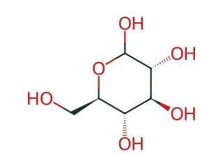
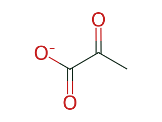
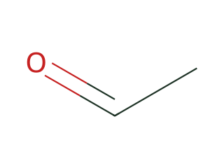
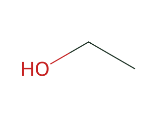
3.3Енергетика
Окисно-відновний баланс тут точний: 2 NADH, утворені в гліцеральдегід-3-фосфатдегідрогеназній реакції, витрачаються на відновлення 2 молекул ацетальдегіду. АТФ утворюється тільки субстратним фосфорилюванням у гліколізі: 2 АТФ на глюкозу (ЕМП) або 1 АТФ у Zymomonas (ЕД) [15]. Значення ΔG°′ розходяться: близько −235 кДж/моль (навчальне значення, наведене в курсових матеріалах) і −267 ± 13 кДж/моль у фізіологічних умовах за розрахунком eQuilibrator [14]. Тепловий ефект (ΔH) становить лише −74,4 кДж, тобто близько 2,6 % теплоти згоряння глюкози. Для порівняння, дихання дає дріжджам лише ~18 АТФ на глюкозу (P/O ≈ 1,2, бо в S. cerevisiae немає комплексу I), а не теоретичні 32–38 [19].
3.4Регуляція та умови
Ефект Пастера: кисень пригнічує спиртове бродіння. Пастер у 1857 р. помітив, що аерація посилює ріст дріжджів, але сповільнює бродіння. Механізм пов’язаний із диханням: надлишок АТФ і цитрату алостерично інгібує фосфофруктокіназу-1 і гальмує гліколіз. Ефект Кребтрі: S. cerevisiae бродить навіть у присутності кисню, якщо концентрація глюкози висока. Його пояснюють компромісом «швидкість–вихід» (бродіння дає менше АТФ на молекулу, але більше за одиницю часу) і стратегією «зробити–накопичити–спожити»: етанол отруює конкурентів і згодом споживається самими дріжджами. Ця стратегія пов’язана з дуплікацією гена алкогольдегідрогенази на бродильну Adh1 і окиснювальну Adh2 та повногеномною дуплікацією близько 100 млн років тому [19]; потім дріжджі споживають етанол [18].
Окисно-відновний баланс клітини видно з форм бродіння за Нейбергом. Перша форма — звичайне спиртове бродіння. Друга (сульфітна): бісульфіт зв’язує ацетальдегід, тому NADH відновлює дигідроксіацетонфосфат до гліцерол-3-фосфату, і клітина утворює гліцерол. Третя (лужна): ацетальдегід дисмутує на етанол і ацетат, теж накопичується гліцерол. Гліцерол — нормальний побічний продукт: у вині його 1–15 г/л, і він надає напою «м’якості» й в’язкості. Надекспресія гена GPD1 підвищує вміст гліцеролу в 1,5–2,5 раза і трохи знижує вихід етанолу [20]. Сивушні (вищі) спирти утворюються з амінокислот шляхом Ерліха: трансамінування до α-кетокислот, декарбоксилювання до альдегідів, відновлення до спиртів [21].
Оптимальна температура росту S. cerevisiae становить 28–33 °C; у 13 штамів T_opt була 29–35 °C, а T_max 39–41 °C. Пиво, сидр і білі вина бродять при 10–25 °C, щоб зберегти аромат, а біоетанол виробляють при ≥ 40 °C. В анаеробних середовищах потрібні ергостерол і Tween 80, бо синтез стеролів вимагає O₂. Оцтова кислота (pKa 4,76) діє як роз’єднувач [18]. Етанол, що накопичується, поступово пригнічує бродіння, і після його видалення активність одразу не відновлюється.
Змінюйте початкову глюкозу, наявність кисню та температуру — графіки покажуть, як змінюються глюкоза, етанол і біомаса. Модель навчальна, якісна.

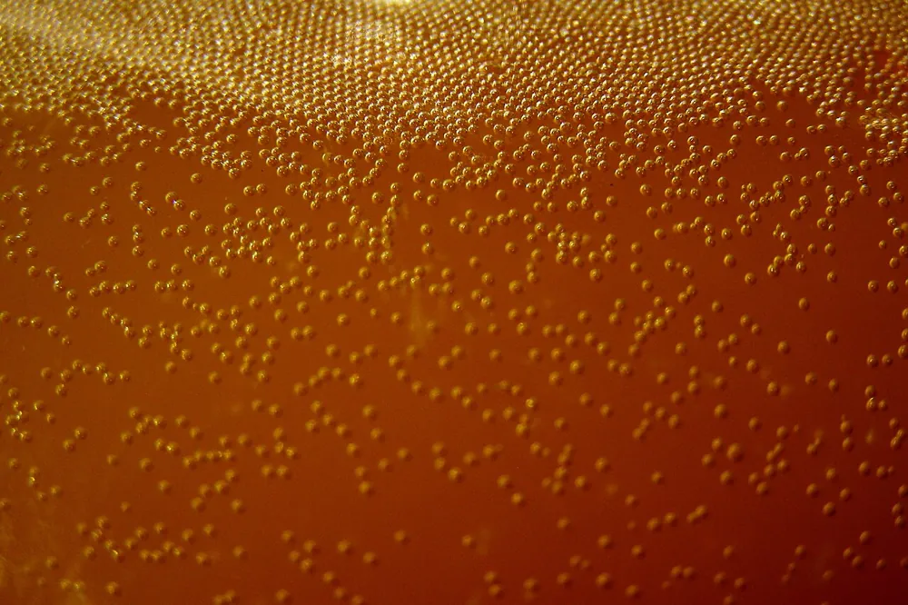

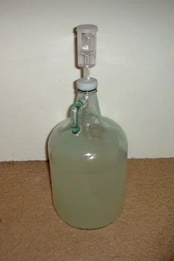

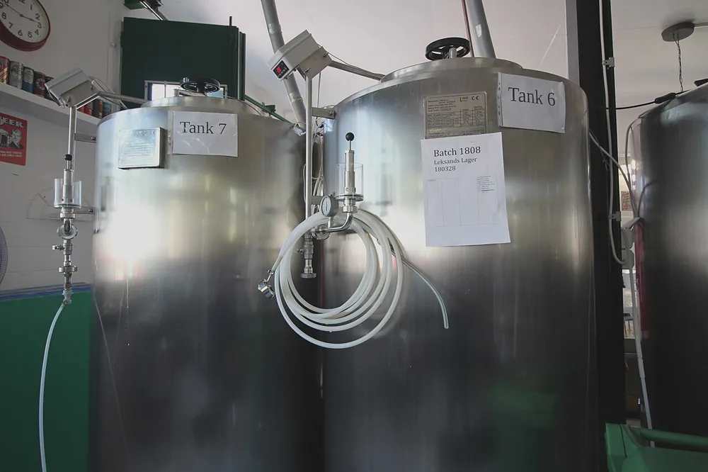

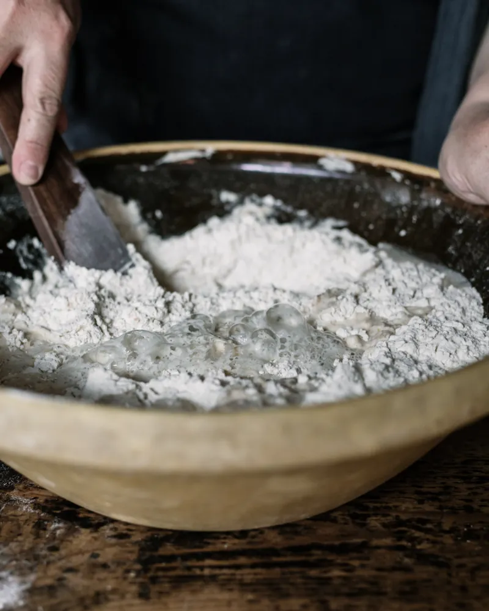
3.5Застосування
Спиртове бродіння лежить в основі виробництва вина, сидру, медовухи, пива, саке, рому, бренді та інших напоїв, а також хліба: CO₂ розпушує тісто, а етанол після випікання залишається менше 2 %. Паливний етанол виробляють із кукурудзи (≈ 0,42 л/кг), цукрової тростини, цукрового буряку, маніоки (≈ 200 л з тонни коренів). Для лігноцелюлозного етанолу сконструйовано штами Z. mobilis, здатні засвоювати ксилозу та арабінозу.

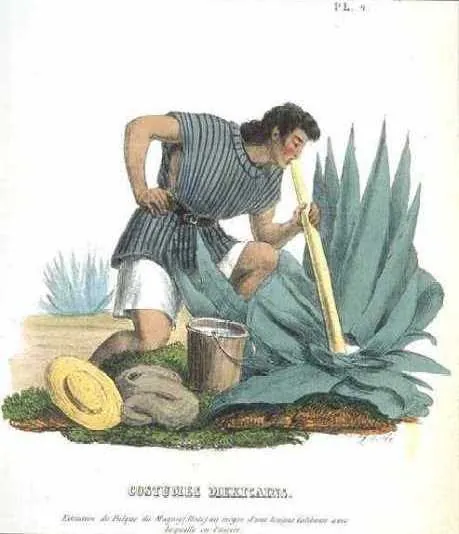

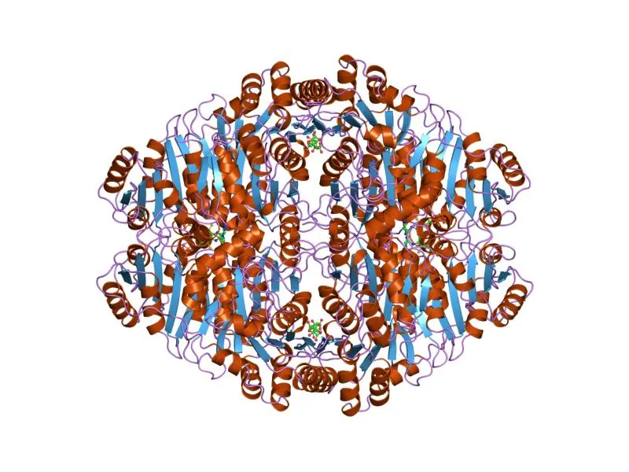
04Оцтовокисле «бродіння»
Важливо. Оцтовокисле бродіння — аеробний окиснювальний процес, а не бродіння в строгому біохімічному сенсі. Кінцевий акцептор електронів — O₂, а АТФ утворюється окисним фосфорилюванням. Термін «бродіння» тут лише історичний і технологічний.
4.1Принцип і збудники
Оцтовокислі бактерії (родина Acetobacteraceae, α-Proteobacteria) — грамнегативні облігатні аероби, поширені в солодких, кислих і спиртовмісних середовищах. Вони частково окиснюють вуглеводи та спирти й виділяють у середовище альдегіди, кетони й органічні кислоти. Саме через накопичення продуктів, як при бродінні, ці процеси й отримали назву «окиснювальних бродінь» [22]. До кінця 2021 р. описано 19 родів і 110 видів оцтовокислих бактерій та 86 продуктів окиснювального бродіння [2]. Для оцту найважливіші роди Acetobacter, Gluconacetobacter, Gluconobacter і Komagataeibacter. Це мезофіли з оптимумом pH 5,0–6,5 і температури 25–30 °C [23].

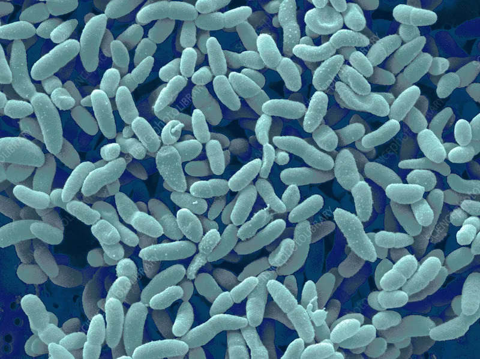

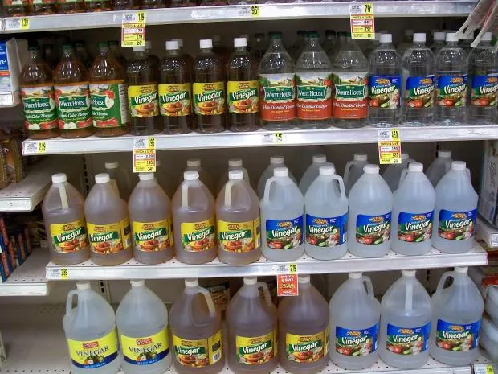

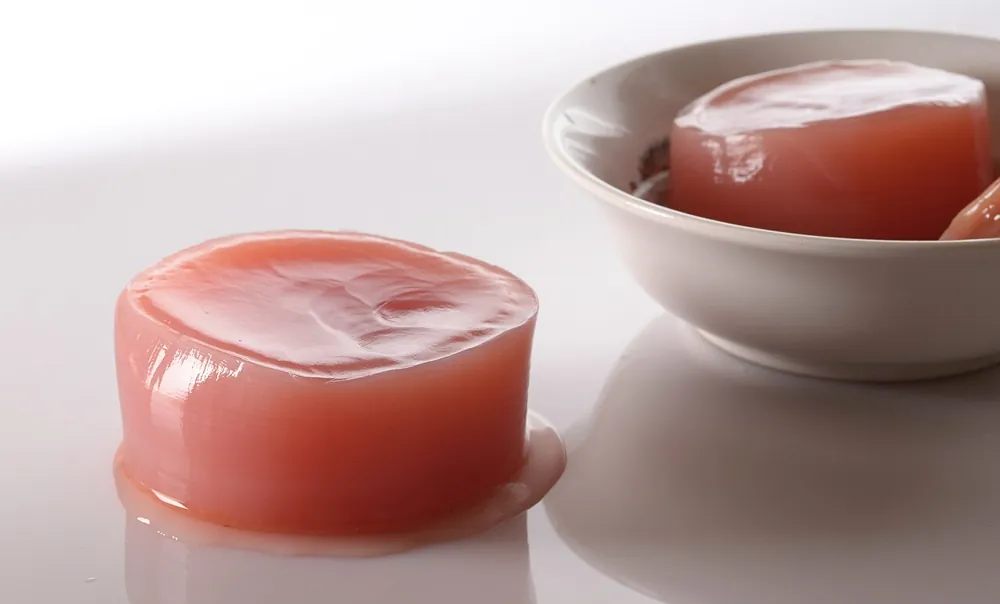
4.2Біохімічний шлях: два мембранні ферменти й дихальний ланцюг
Особливість процесу в тому, що етанол окиснюється в периплазмі, на зовнішньому боці цитоплазматичної мембрани, і продукт ніколи не потрапляє в цитоплазму [2]:
| Етап | Фермент | Кофактори й будова | Реакція |
|---|---|---|---|
| 1 | Мембранна PQQ-залежна алкогольдегідрогеназа (PQQ-ADH) | Субодиниця I: піролохінолінхінон (PQQ) + гем c; II: три геми, відновлює убіхінон; III: мембранний якір | C₂H₅OH → CH₃CHO + 2 e⁻ + 2 H⁺ |
| 2 | Мембранна альдегіддегідрогеназа (mALDH) | Молібдоптерин-цитозиндинуклеотид (або PQQ), три геми, два кластери [2Fe–2S] | CH₃CHO + H₂O → CH₃COOH + 2 e⁻ + 2 H⁺ |
| 3 | Убіхінон → термінальна убіхінолоксидаза | цитохром bo₃ (за нейтрального pH) або bd-оксидаза (за низького pH, висока спорідненість до O₂) | 2 UQH₂ + O₂ → 2 UQ + 2 H₂O; утворюється протонрушійна сила для АТФ-синтази |
Сумарне рівняння:
Цитоплазматичні NAD-залежна алкогольдегідрогеназа і NADP-залежна альдегіддегідрогеназа в бактерій теж є, але під час синтезу оцтової кислоти вони повністю пригнічені. Гіпоксія знижує продукцію і може вбити клітини [24].
Увімкніть або вимкніть кисень і етанол: побачите, де відбувається окиснення, куди йдуть електрони і що буде, коли етанол вичерпано.
Натискайте «Далі» (або клацайте етап): лічильники показують баланс електронів (NADH-еквівалентів) і АТФ. На кінці баланс має дорівнювати нулю.
4.3Енергетика
Окиснення 1 моль етанолу до оцтової кислоти дає ≈ 493 кДж. Song et al. (2022) наводять це значення як вільну енергію Гіббса, Qiu et al. (2021) — як теплоту. В обох випадках процес сильно екзотермічний, тому промисловий ацетатор потребує охолодження. АТФ утворюється лише окисним фосфорилюванням, без субстратного. Кількісного виходу АТФ на молекулу етанолу в опрацьованих джерелах не знайдено: він залежить від типу термінальної оксидази (bo₃ чи bd). Швидкість утворення оцтової кислоти в Acetobacter pasteurianus тісно корелює з енергетичним зарядом клітини (r = 0,9981) і вмістом АТФ (r = 0,9826) [25].
4.4Регуляція, кислотостійкість і «переокиснення»
Acetobacter накопичує 5–10 % оцтової кислоти, Komagataeibacter — 10–20 %, тому в глибинних процесах з кислотністю понад 5 % домінує Komagataeibacter [23]. Кислотостійкість забезпечують кілька механізмів [24]. Змінюються мембранні ліпіди: у K. europaeus за 3 % оцтової кислоти гліколіпідів стає на 67 % більше. Збільшується кількість PQQ-ADH (до шести копій гена). Працюють ABC-транспортери, що викачують кислоту (93 гени в K. oboediens проти 21 у A. pasteurianus). Частина ацетату засвоюється через цикл трикарбонових кислот: надекспресія аконітази підвищила вихід оцтової кислоти на 25 %. Роль відіграють також шаперони й системи «токсин–антитоксин» [26]. Нижче pKa (4,75) оцтова кислота здебільшого протонована й дифундує в клітини, а етанол понад 48 г/л знижує виживання бактерій [25].
Коли етанол вичерпується, Acetobacter і Komagataeibacter окиснюють накопичений ацетат через цикл трикарбонових кислот до CO₂ і H₂O [2]:
Gluconobacter oxydans цього не робить: у неї немає гліколізу (ЕМП) і неповний цикл трикарбонових кислот. Оцтове окиснення слід відрізняти від справжнього гомоацетатного бродіння строгих анаеробів (Moorella thermoacetica, Clostridium aceticum): в них одна молекула глюкози дає три молекули ацетату, CO₂, вивільнений при декарбоксилюванні пірувату, повторно фіксується шляхом Вуда–Льюнгдаля (C₆H₁₂O₆ → 3 CH₃COOH, ΔG° = −310,9 кДж/моль).
4.5Де відбувається і застосування
У природі оцтовокисле окиснення відбувається на квітах і фруктах та в забродилих соках. Вино, залишене на повітрі, скисає саме так: що анаеробне спиртове бродіння змінюється аеробним оцтовокислим. Оцет виготовляють у дві стадії: спочатку дріжджове спиртове бродіння, потім окиснення етанолу оцтовокислими бактеріями [23]. Технологія еволюціонувала від повільного поверхневого (орлеанського) методу тривалістю в місяці, з кислотністю не більше 8 %, через «німецький» генераторний метод Шютценбаха (1823; стікання по буковій стружці, 1–2 тижні) до глибинного методу, який займає 1–2 доби. Глибинна ферментація A. pasteurianus при 30 °C дала 88,6 г/л кислоти зі швидкістю 2,06 г/(л·год) [25]. Оцет зазвичай містить 4–18 % оцтової кислоти, а виготовляли його ще у Вавилоні близько 3000 р. до н. е.
Ті самі периплазматичні дегідрогенази Gluconobacter окиснюють глюкозу до глюконової кислоти (PQQ-глюкозодегідрогеназа), гліцерол до дигідроксиацетону, а D-сорбітол до L-сорбози (ФАД-залежна сорбітолдегідрогеназа). Останнє — мікробна стадія промислового синтезу вітаміну C [2, 23]. Оцтовокислі бактерії разом із дріжджами утворюють «чайний гриб» (комбучу). K. xylinus синтезує бактеріальну целюлозу для харчової промисловості та ранових пов’язок [2]. Водночас ці бактерії псують вино, сидр і пиво.

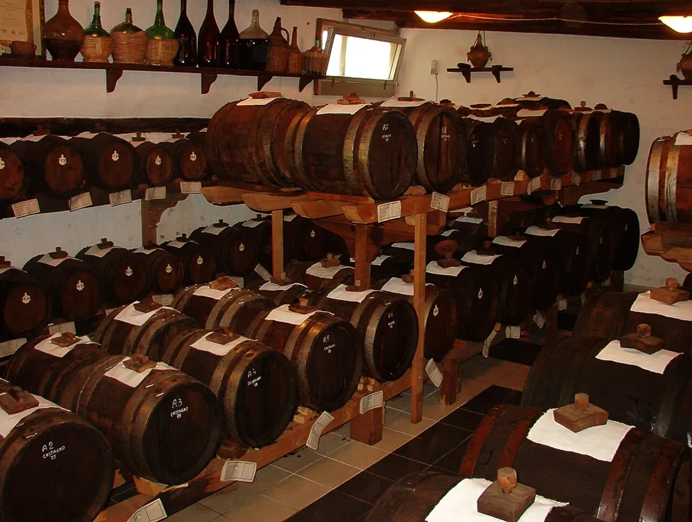

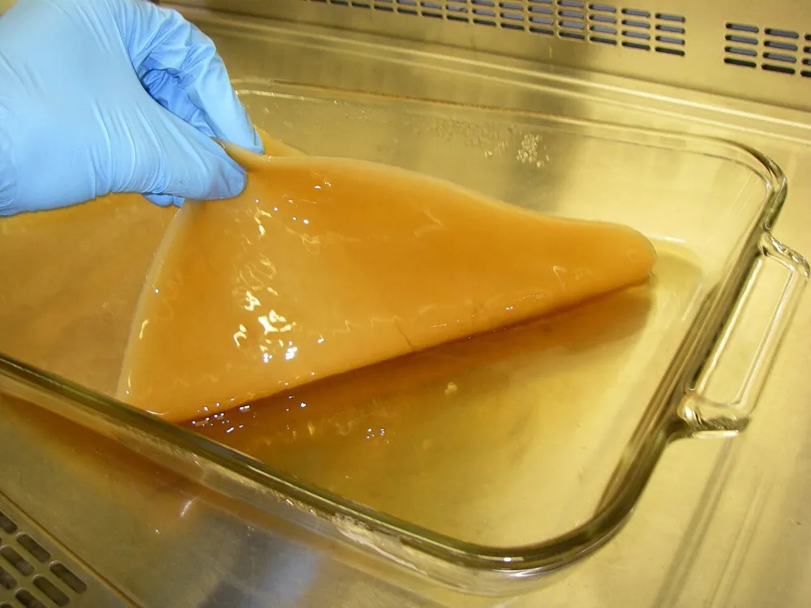

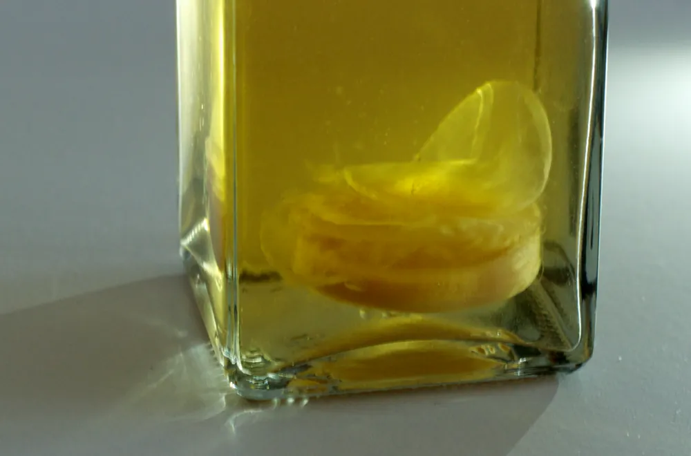
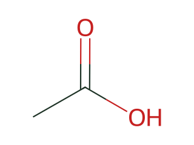
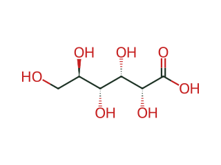
05Молочнокисле бродіння
5.1Принцип і збудники
Молочнокислі бактерії — грампозитивні коки та палички, що не утворюють спор і каталазонегативні. У них немає гемових ферментів і активних цитохромоксидаз, тому вони є аеротолерантними анаеробами й отримують енергію переважно субстратним фосфорилюванням. Кисень вони споживають за допомогою флавопротеїнових оксидаз (NADH-оксидаза, NADH-пероксидаза, піруватоксидаза). Деякі види (L. johnsonii, L. gasseri) здатні дихати лише за наявності гему в середовищі та менахінону [27]. Ці бактерії живуть у повітрі, воді, ґрунті, на овочах і фруктах, але насамперед у молоці та кишечнику людини й тварин. У 2020 р. рід Lactobacillus (261 вид) розділили на 25 родів, серед них Lactiplantibacillus, Lacticaseibacillus, Limosilactobacillus, Levilactobacillus і Lentilactobacillus, а родину Leuconostocaceae об’єднали з Lactobacillaceae [28]. Біфідобактерії часто згадують разом із молочнокислими, але таксономічно це актинобактерії (Actinomycetota) з власним шляхом розщеплення цукрів.

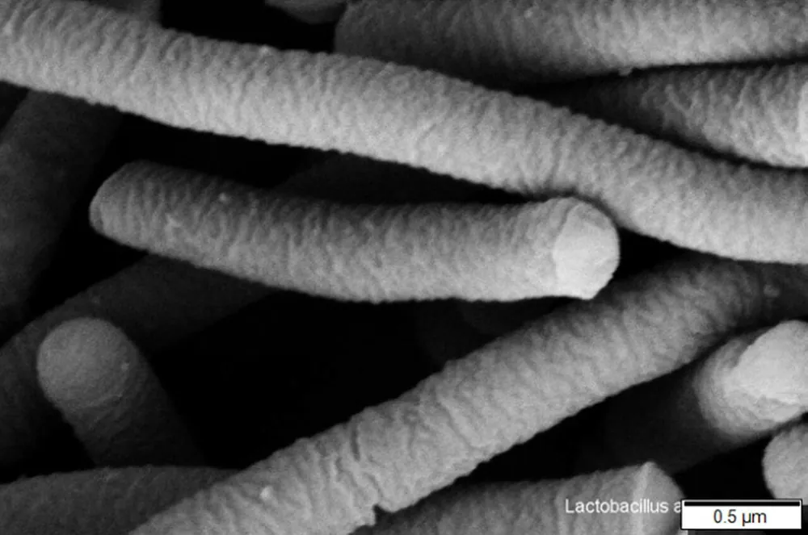

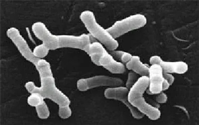
5.2Гомоферментативний шлях
Гомоферментативні бактерії (Lactococcus, Streptococcus, L. delbrueckii subsp. bulgaricus та ін.) проводять глюкозу гліколізом до пірувату. Лактатдегідрогеназа (ЛДГ) відновлює піруват до лактату за рахунок NADH, і NAD⁺ повертається на гліцеральдегід-3-фосфатдегідрогеназну стадію. Це найкоротший можливий спосіб замкнути окисно-відновний цикл: піруват сам є акцептором, без жодних проміжних реакцій. Оптичну форму продукту визначає набір ферментів штаму: L-ЛДГ (КФ 1.1.1.27) утворює L-лактат, D-ЛДГ (КФ 1.1.1.28) — D-лактат [29, 30].
Сумарне рівняння (гомоферментативне):
У деяких навчальних посібниках до цього рівняння помилково дописують «+ CO₂». Гомоферментативне молочнокисле бродіння CO₂ не утворює: баланс атомів (C₆H₁₂O₆ = 2 × C₃H₆O₃) замкнений без газу. Енергетичні оцінки трохи різняться: ΔG°′ = −185 кДж/моль [13], −197 кДж/моль і −178 кДж/моль для шляху ЕМП за розрахунком eQuilibrator при pH 7,2 [31]. Розбіжності пов’язані з різними стандартними станами (молочна кислота чи лактат-аніон і H⁺). Вихід — 2 АТФ на глюкозу [32].
Натискайте «Далі» (або клацайте етап): лічильники показують баланс електронів (NADH-еквівалентів) і АТФ. На кінці баланс має дорівнювати нулю.
5.3Гетероферментативний (фосфокетолазний) шлях
Облігатно гетероферментативним бактеріям (Leuconostoc, Weissella, Oenococcus, колишні «лактобацили» з родів Limosilactobacillus, Levilactobacillus) бракує фруктозо-1,6-бісфосфатальдолази. Тому вони окиснюють глюкозо-6-фосфат через 6-фосфоглюконат до рибулозо-5-фосфату, ізомеризують його до ксилулозо-5-фосфату, а фосфокетолаза розщеплює ксилулозо-5-фосфат на гліцеральдегід-3-фосфат і ацетилфосфат [31]. Гліцеральдегід-3-фосфат іде нижньою частиною гліколізу до лактату і дає 2 АТФ. Ацетилфосфат відновлюється до етанолу, що окиснює два NADH з окиснювальної стадії. Оскільки на початку витрачено 1 АТФ (гексокіназа), чистий вихід — 1 АТФ:
Теоретичний вихід молочної кислоти тут лише 0,5 г/г [29]. Парадоксально, але фосфокетолазний шлях термодинамічно вигідніший (−186,8 кДж/моль) за ЕМП (−178,0 кДж/моль), хоча дає вдвічі менше АТФ [31]: «зайва» енергія розсіюється, а не запасається. Нестачу АТФ гетероферментативні бактерії компенсують кількома способами. Вони використовують зовнішні акцептори: відновлення фруктози до манітолу звільняє ацетилфосфат для синтезу ацетату з додатковим АТФ. Працює яблучно-молочне бродіння (≈ 0,25–0,28 АТФ на малат). За наявності O₂ співвідношення лактат : етанол : ацетат зсувається від 1:1:0 до 1:0:1, бо NADH-оксидаза бере на себе регенерацію NAD⁺ [31].
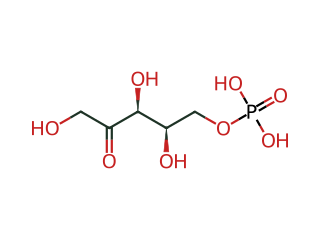
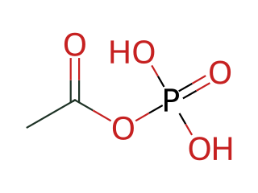
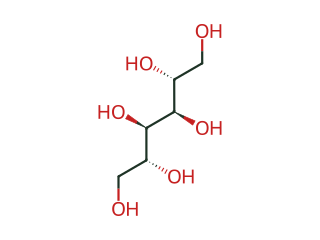
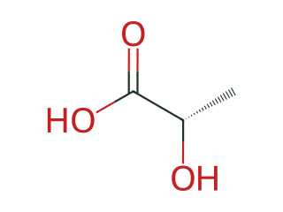
5.4Біфідобактеріальний шунт
Біфідобактерії розщеплюють уже фруктозо-6-фосфат ферментом фруктозо-6-фосфатфосфокетолазою (таксономічний маркер родини Bifidobacteriaceae) на ацетилфосфат і еритрозо-4-фосфат. Подальші перетворення за участі трансальдолази й транскетолази дають 2,5 АТФ на глюкозу, тобто більше, ніж обидва попередні варіанти [32]:
5.5Регуляція та перемикання
У Lactococcus lactis тип бродіння залежить від швидкості гліколітичного потоку. Коли глюкози багато й потік швидкий, метаболізм гомоферментативний, а високий рівень тріозофосфатів пригнічує піруват-форміат-ліазу. На повільних цукрах (лактоза, галактоза) бактерія переходить на змішане кислотне бродіння (форміат, ацетат, етанол) через піруват-форміат-ліазу. Головна причина — пригнічення ЛДГ співвідношенням NADH/NAD⁺ in vivo [33]. Сенс переходу енергетичний: ацетил-КоА → ацетилфосфат → ацетат дає додатковий АТФ, коли нікуди поспішати. Кислотостійкість молочнокислих бактерій підтримують аргініндеімінази шлях (NH₃ і АТФ) та декарбоксилювання амінокислот (глутамат → ГАМК), яке створює протонрушійну силу [30].
Змінюйте швидкість гліколітичного потоку: бактерія переходить від гомолактатного до змішаного кислотного бродіння. Це якісна модель за даними Garrigues et al.
5.6Молочнокисле бродіння в організмі людини
У людини «молочнокисле бродіння» називається анаеробним гліколізом. Еритроцити не мають мітохондрій і повністю залежать від нього. Швидкі скелетні м’язи переходять на нього, коли потреба в АТФ перевищує можливості окисного фосфорилювання. На анаеробний гліколіз значною мірою покладаються також рогівка, кришталик і мозкова речовина нирки. Під час інтенсивного навантаження лактатне бродіння забезпечує енергію приблизно від 10 с до 2 хв. Лактат переноситься до печінки й перетворюється на глюкозу (цикл Корі). Гліколіз дає 2 АТФ, глюконеогенез витрачає 6, тож кожен оберт циклу коштує 4 АТФ. У людей, що голодують, лактат циклу Корі забезпечував 18–36 % глюконеогенезу. Сучасна «теорія лактатного човника» (Брукс) показала, що лактат утворюється постійно й за аеробних умов і служить основним паливом, головним попередником глюконеогенезу та сигнальною молекулою, а не «відходом» [34]. Пухлинні клітини використовують аеробний гліколіз (ефект Варбурга) — енергетично неефективний процес, який, імовірно, полегшує накопичення біомаси [35].


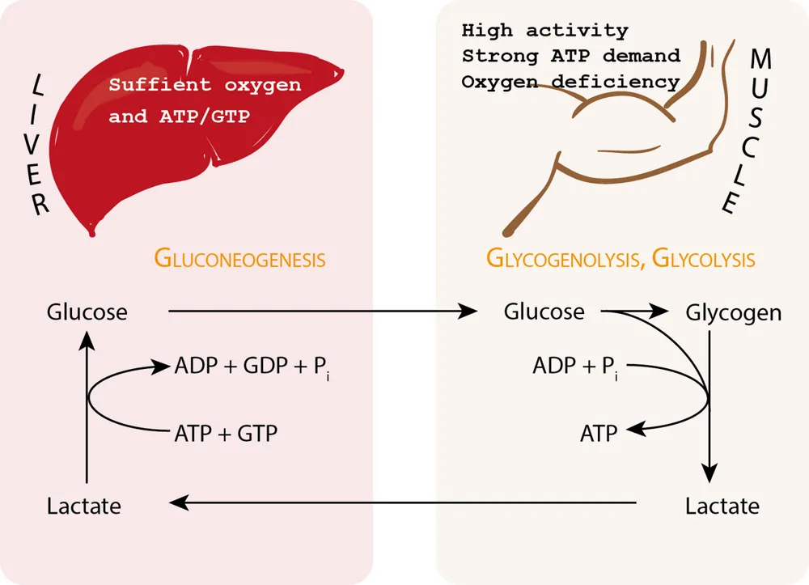
5.7Застосування
Молочнокисле бродіння дає йогурт (обов’язкова закваска L. bulgaricus + Streptococcus thermophilus), кефір, кумис, сири, квашену капусту й кімчі (тут домінує Leuconostoc), солоні огірки, силос, закваску для хліба, ферментовані ковбаси та кислі сорти пива [31]. Консервуючий ефект має кілька рівнів: низький pH, недисоційована кислота і бактеріоцини. Нізин Lactococcus lactis — пептид масою 3,4 кДа з 34 амінокислот. Він зв’язує попередник клітинної стінки ліпід II і утворює пори в мембрані грампозитивних бактерій [36]. Промислову молочну кислоту для біорозкладного пластику полілактиду (ПЛА) потрібно отримувати оптимально чистою (≥ 99 % L-форми). Молочнокислі бактерії та Bacillus забезпечують близько 90 % великотоннажного виробництва L-молочної кислоти, а титри сягають 162–264 г/л [29].

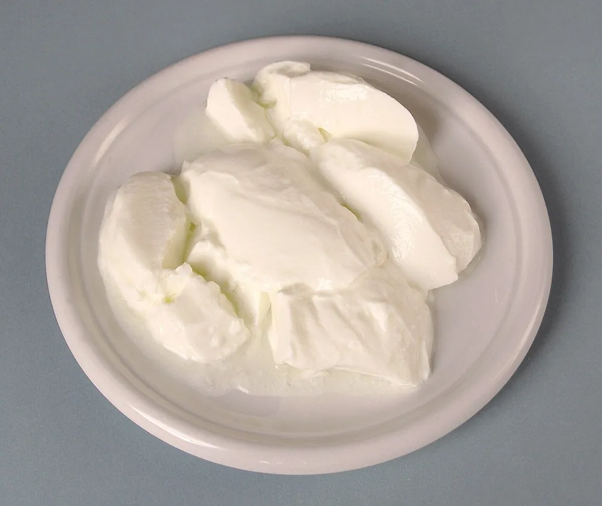

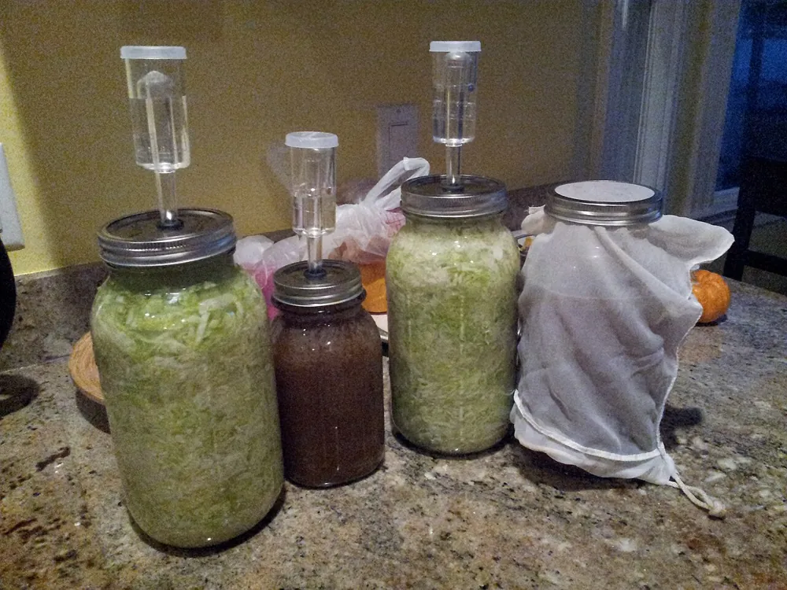

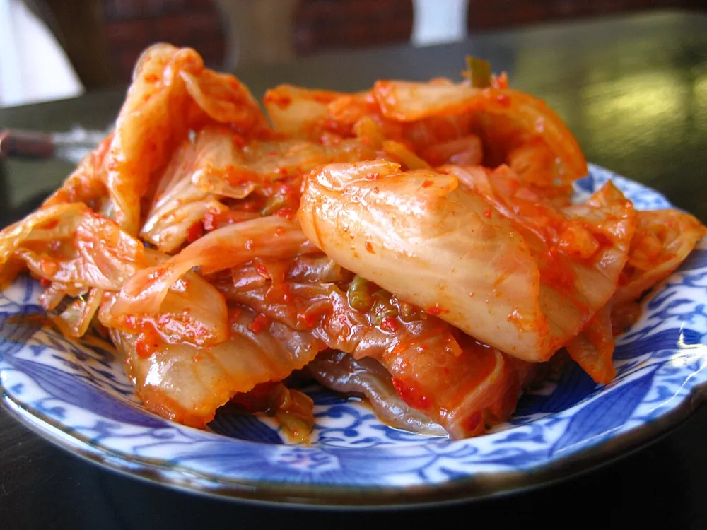

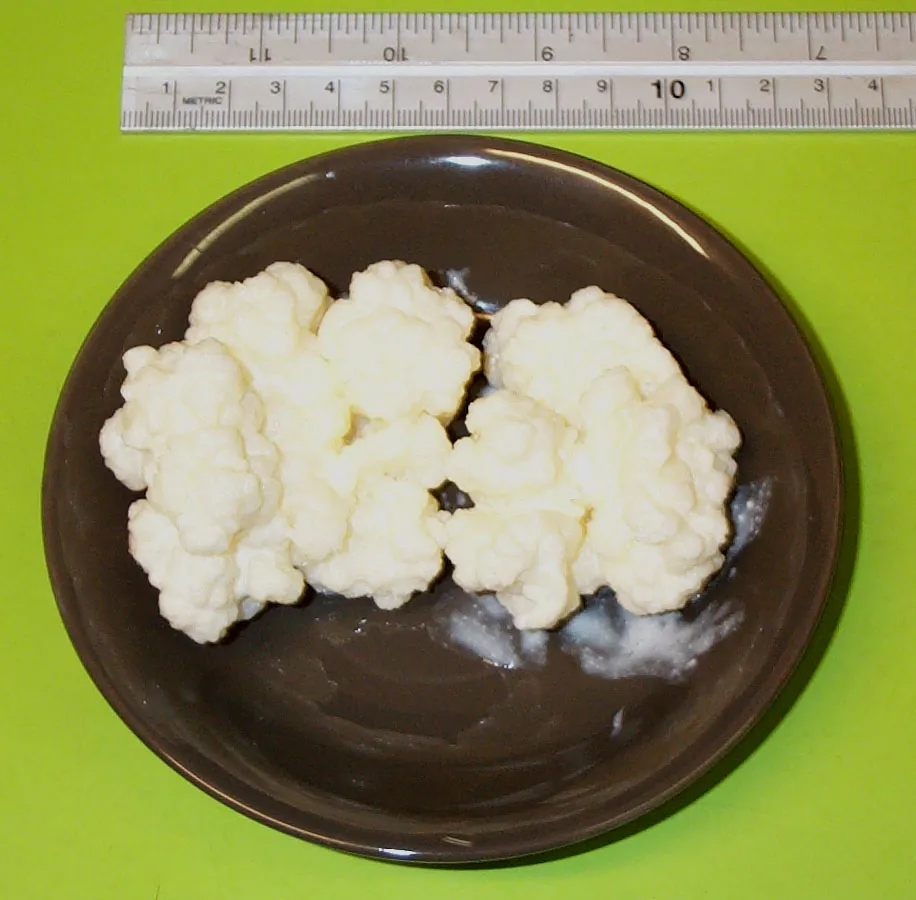

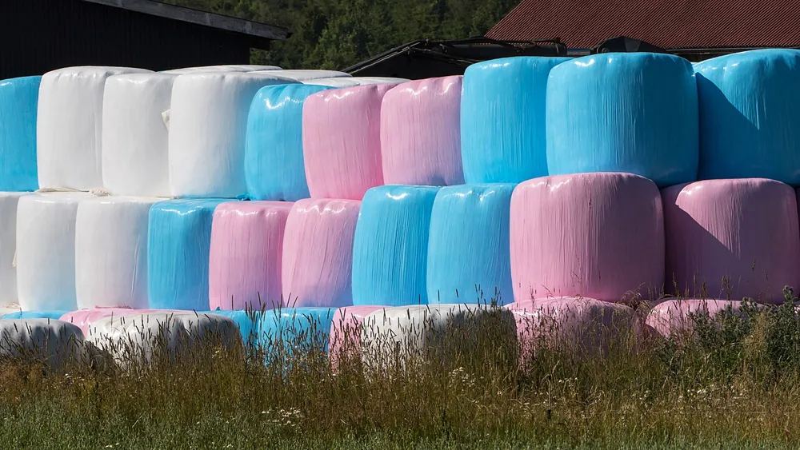

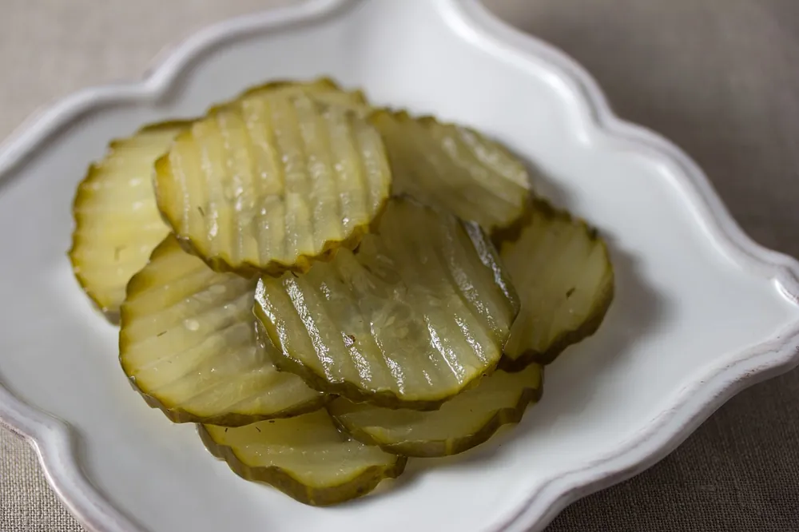
06Пропіоновокисле бродіння
6.1Принцип і збудники
Пропіоновокислі бактерії — грампозитивні нерухливі каталазопозитивні плеоморфні палички (Actinomycetota), що не утворюють спор. Оптимальні умови для них — близько 30 °C і pH ≈ 7 (діапазон 4,5–8,0). Вони переносять 6,5 % NaCl, ростуть повільно і на твердих середовищах лише в анаеробних умовах [37]. Зброджують глюкозу, лактозу, фруктозу, гліцерол і лактат. Бродіння пропіоновокислих бактерій уперше описав Альберт Фітц у 1878 р. [38]. У 2016 р. рід розділили: сирна Propionibacterium freudenreichii залишилася в Propionibacterium, найкращий промисловий продуцент став Acidipropionibacterium acidipropionici, а шкірні види віднесли до Cutibacterium [39].

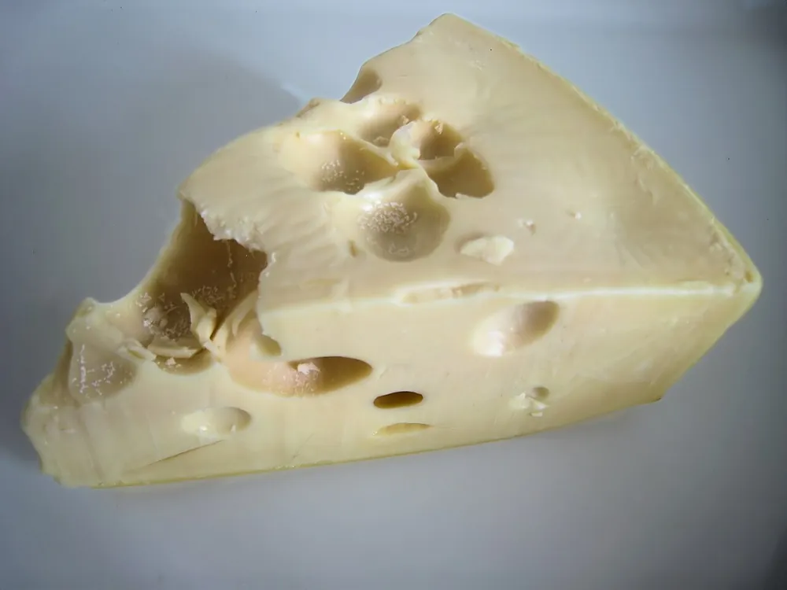

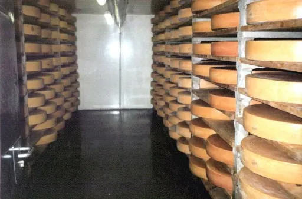
6.2Біохімічний шлях: цикл Вуда–Веркмана
Принцип пропіоновокислого бродіння — двостороння утилізація пірувату. З трьох піруватів два відновлюються до пропіонату в циклі, який поглинає NADH, а третій окиснюється до ацетату й CO₂, даючи NADH та АТФ. Відновна гілка — циклічний метилмалоніл-КоА-шлях Вуда–Веркмана [37, 38]:
| Етап | Фермент | Кофактор | Реакція |
|---|---|---|---|
| 1 | Метилмалоніл-КоА:піруват-транскарбоксилаза (КФ 2.1.3.1; субодиниці 1.3S, 5S, 12S) | біотин | (S)-метилмалоніл-КоА + піруват → пропіоніл-КоА + оксалоацетат (без витрати АТФ) |
| 2 | Малатдегідрогеназа | NADH | Оксалоацетат → малат |
| 3 | Фумараза | — | Малат → фумарат + H₂O |
| 4 | Мембранна фумаратредуктаза | менахінон, цитохроми | Фумарат → сукцинат; спряжена з електронним транспортом |
| 5 | Пропіоніл-КоА:сукцинат-КоА-трансфераза | — | Сукцинат + пропіоніл-КоА → сукциніл-КоА + пропіонат |
| 6 | Метилмалоніл-КоА-мутаза | аденозилкобаламін (кофермент B₁₂) | Сукциніл-КоА → (R)-метилмалоніл-КоА |
| 7 | Метилмалоніл-КоА-епімераза | — | (R)- → (S)-метилмалоніл-КоА (повертається на етап 1) |
| Окисна гілка | ЛДГ (з лактату); піруватдегідрогеназа/ПФОР; фосфотрансацетилаза + ацетаткіназа | NAD⁺, КоА | Піруват → ацетил-КоА + CO₂ → ацетилфосфат → ацетат + АТФ |
Кофактори фумаратредуктази (менахінон, цитохроми) і назву КоА-трансферази наведено за стандартними схемами; джерела підтверджують мембранну локалізацію фумаратредуктази та її спряження з електронним транспортом.
Головна «знахідка» циклу — транскарбоксилаза. Вона передає карбоксильну групу з метилмалоніл-КоА прямо на піруват без участі вільного CO₂ та без витрати АТФ, тому цикл «зберігає цілий АТФ» [38]. Вітамін B₁₂ потрібен для ключової ізомеризації сукциніл-КоА → метилмалоніл-КоА [37].
Крутіть цикл крок за кроком. Вимкніть B₁₂ (або біотин) — подивіться, де «заклинить» карусель.
Сумарні рівняння:
Співвідношення пропіонат : ацетат = 2 : 1 задане окисно-відновним балансом. За нашим підрахунком, 1,5 глюкози → 3 пірувати дають 3 NADH, а окиснення одного пірувату до ацетил-КоА — ще 1 NADH, разом 4. Два оберти циклу споживають саме 4 відновні еквіваленти (на малатдегідрогеназній і фумаратредуктазній стадіях). На практиці співвідношення варіює від 1:1 за стресу до 1:8 [37].
Показано баланс на 3 глюкози (рівняння вище): електронні пари, що утворюються при гліколізі та окисній гілці, повністю витрачаються в циклі.
6.3Енергетика: найвищий вихід серед «простих» бродінь
Пропіоновокисле бродіння поєднує субстратне фосфорилювання (гліколіз + ацетаткіназа) з електронтранспортним фосфорилюванням на фумаратредуктазі. Оцінки виходу в джерелах різняться:
| Джерело | Основа розрахунку | Вихід АТФ |
|---|---|---|
| Gonzalez-Garcia et al. 2017 | на глюкозу, цикл Вуда–Веркмана | ≈ 4 АТФ (3,43 за потоку, оптимізованого на пропіонат) |
| Seeliger, Janssen & Schink 2002 | на лактат, P. freudenreichii | 0,78 АТФ (≈ 2,33 на 3 лактати) |
За нашим зведенням компонентів, на 1,5 глюкози припадає 3 АТФ з гліколізу, +1 АТФ від ацетаткінази і +2 × (⅔–1) АТФ від двох реакцій фумаратредуктази. Разом це ≈ 5,3–6 АТФ, або ≈ 3,5–4 АТФ на глюкозу. Цикл Вуда–Веркмана — енергетично найефективніший відомий шлях утворення пропіонату [38].
Інші організми утворюють пропіонат менш вигідними шляхами. Акрилатний шлях (Clostridium propionicum, Megasphaera elsdenii, Coprococcus catus) відновлює лактат через лактоїл-КоА та акрилоїл-КоА. Енергія відновлення акрилоїл-КоА виділяється як тепло, тож лишається ≈ 0,33 АТФ на лактат [40]. Сукцинатний шлях з Na⁺-помпою декарбоксилазою використовують Veillonella, Bacteroides і Propionigenium: декарбоксилювання метилмалоніл-КоА викачує 2 Na⁺ (≈ 0,25 АТФ) [38]. 1,2-Пропандіоловий шлях працює на дезоксицукрах (фукоза, рамноза) у Salmonella та Roseburia inulinivorans [41].
6.4Де відбувається і застосування
Сир. У швейцарських сирах (емменталь, леердамер, конте) P. freudenreichii під час дозрівання в теплій камері (≈ 20–24 °C) зброджує лактат, який залишили молочнокислі бактерії, до пропіонату, ацетату і CO₂. Так утворюються «очки» сиру і солодкувато-горіховий смак [42]. Голова сиру масою 80 кг виділяє близько 120 л CO₂, і 70–80 % цього газу дає саме пропіоновокисле бродіння [42]. Рубець жуйних. Пропіонат із рубця — головний субстрат глюконеогенезу в печінці корів [43]. Він дає 50–60 % глюкози гепатоцита [44]. Цікаво, що печінка тварини проводить реакції циклу у зворотному напрямку: пропіоніл-КоА-карбоксилаза → метилмалоніл-КоА-мутаза (B₁₂) → сукциніл-КоА [43]. Товста кишка людини. Тут пропіонат з гексоз утворюється переважно сукцинатним шляхом Bacteroidetes і Negativicutes (маркерний ген mmdA), а акрилатний і пропандіоловий шляхи другорядні [41]. Пропіонат, імовірно, знижує ліпогенез і рівень холестерину [45] і поглинається переважно печінкою [46].
Застосування. P. freudenreichii — єдиний мікроорганізм зі статусом GRAS, що синтезує активну форму вітаміну B₁₂. Хімічний синтез B₁₂ потребує близько 70 стадій, тому вітамін виробляють лише мікробіологічно. Процес двостадійний: спочатку анаеробний ріст і синтез коринового кільця, потім м’яка аерація, бо нижній ліганд 5,6-диметилбензімідазол утворюється тільки за участі O₂ [37]. Пропіонова кислота (E280) та її солі консервують хліб і корми: це антифунгальний агент, максимальна рекомендована концентрація 3000 мг/кг. Світовий ринок становить ≈ 450 тис. т на рік, проте майже весь обсяг виробляють нафтохімічно [38]. Найвищий ферментаційний титр сягнув 136 г/л [37].
Зсуньте час і температуру дозрівання, додайте спори клостридій — побачите, як змінюється розріз. Схематична модель.

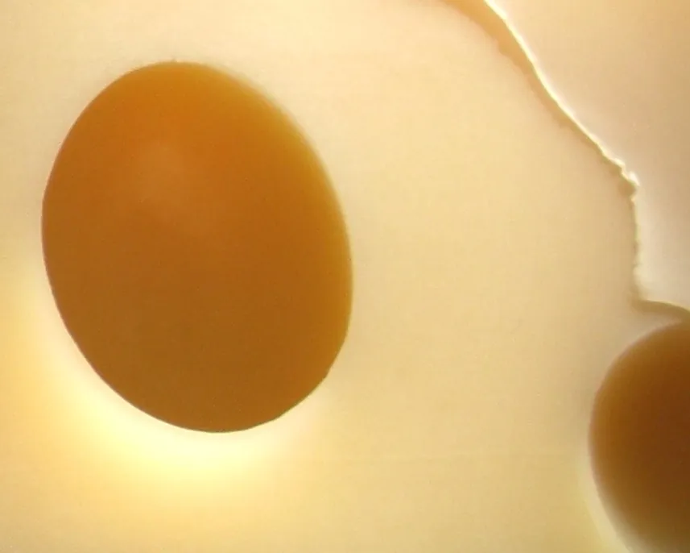

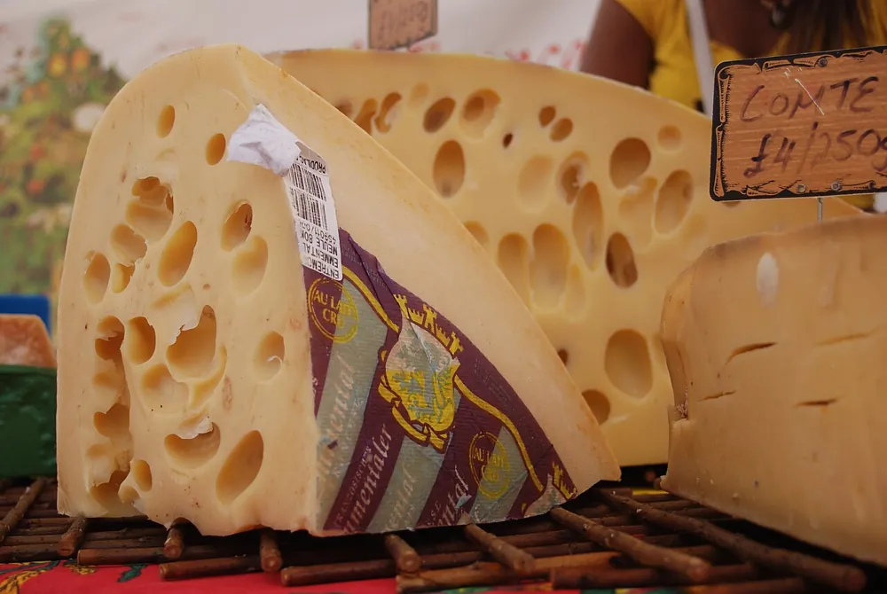
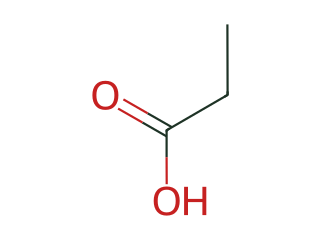
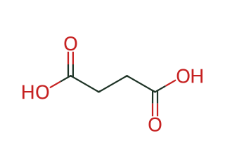
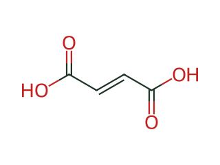
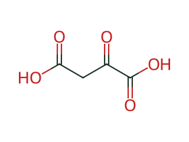
07Маслянокисле бродіння
7.1Принцип і збудники
Класичне маслянокисле бродіння проводять строго анаеробні грампозитивні спороутворювальні клостридії: Clostridium butyricum, C. tyrobutyricum, C. kluyveri, C. beijerinckii, C. acetobutylicum [47, 48]. Той самий бутирил-КоА-шлях у товстій кишці людини проводять філогенетично різноманітні Firmicutes, серед яких найчисленніші групи Eubacterium rectale/Roseburia та Faecalibacterium prausnitzii [49]. Переважно це клостридіальні кластери IV і XIVa [50]. У рубці цей шлях проводять Butyrivibrio [5].

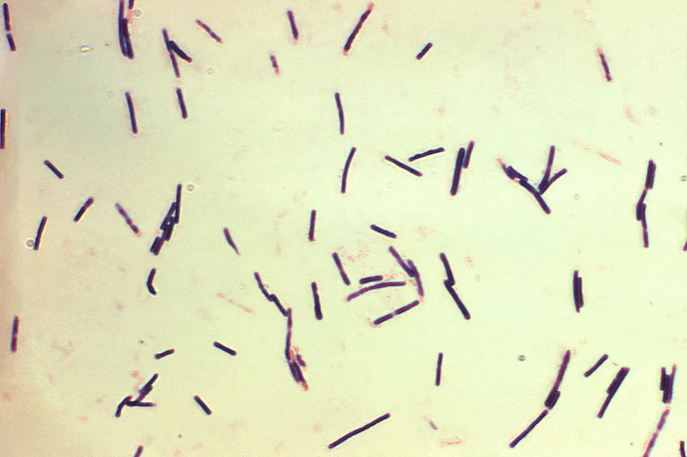

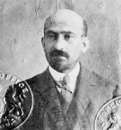
7.2Біохімічний шлях: «зворотне β-окиснення» з біфуркацією
Принцип маслянокислого бродіння — конденсація двох молекул ацетил-КоА і поступове відновлення продукту конденсації, яке поглинає NADH з гліколізу. Додатковий «стік» електронів — водень. Послідовність реакцій така [51, 49]:
| Етап | Фермент | Кофактори | Реакція |
|---|---|---|---|
| 1 | Ферменти гліколізу | NAD⁺, Mg²⁺ | Глюкоза → 2 піруват + 2 АТФ + 2 NADH |
| 2 | Піруват:фередоксин-оксидоредуктаза (ПФОР) | ТПФ, Fe–S, фередоксин | 2 піруват + 2 КоА → 2 ацетил-КоА + 2 CO₂ + 2 Fd_відн |
| 3 | Гідрогеназа | Fe–S | Fd_відн + 2 H⁺ → Fd_ок + H₂ |
| 4 | Ацетил-КоА-ацетилтрансфераза (тіолаза) | — | 2 ацетил-КоА → ацетоацетил-КоА + КоА |
| 5 | 3-Гідроксибутирил-КоА-дегідрогеназа | NADH | Ацетоацетил-КоА → 3-гідроксибутирил-КоА |
| 6 | Кротоназа (еноїл-КоА-гідратаза) | — | 3-гідроксибутирил-КоА → кротоніл-КоА + H₂O |
| 7 | Бутирил-КоА-дегідрогеназа/Etf (Bcd–EtfAB), біфуркація | ФАД | Кротоніл-КоА + 2 NADH + Fd_ок → бутирил-КоА + 2 NAD⁺ + Fd_відн |
| 8а | Фосфотрансбутирилаза + бутираткіназа | АДФ | Бутирил-КоА → бутирилфосфат → бутират + АТФ |
| 8б | Бутирил-КоА:ацетат-КоА-трансфераза (альтернатива) | — | Бутирил-КоА + ацетат → бутират + ацетил-КоА |
NADH-залежність стадії 5 і кофактори ПФОР та гідрогенази наведено за стандартною схемою; у джерелах вони для кожного організму окремо не підтверджені.
Найцікавіший етап — сьомий. Комплекс Bcd–EtfAB Clostridium kluyveri спрягає ендергонічне відновлення фередоксину (E₀′ ≈ −410 мВ за Li et al. 2008; −420 мВ за Buckel & Thauer 2018) за рахунок NADH (−320 мВ) з екзергонічним відновленням кротоніл-КоА до бутирил-КоА (−10 мВ). Стехіометрія така: 2 NADH + 1 Fd_ок + 1 кротоніл-КоА → 2 NAD⁺ + 1 Fd_відн + 1 бутирил-КоА [51]. Це перший описаний (2008) приклад флавінової біфуркації електронів [8]. Простими словами, «падіння» однієї пари електронів з великою енергією штовхає другу пару «вгору» на фередоксин. Відновлений фередоксин потім або віддає електрони гідрогеназі (H₂), або через мембранний комплекс Rnf створює іонний градієнт для АТФ-синтази. Дидактично весь шлях (тіолаза → гідроксиацил-КоА-дегідрогеназа → кротоназа → ацил-КоА-дегідрогеназа) — це β-окиснення жирних кислот, яке працює у зворотному напрямку як стік для електронів. Біфуркація розв’язує єдину стадію, яку за фізіологічних потенціалів неможливо просто «повернути назад».
Дві пари електронів NADH (−320 мВ) зустрічаються на флавіні: одна «падає» до кротоніл-КоА (−10 мВ), штовхаючи другу «вгору» до фередоксину (≈ −410…−420 мВ). Перемикайте режими.
Кінцевий крок у більшості кишкових продуцентів каталізує бутирил-КоА:ацетат-КоА-трансфераза, а не бутираткіназа [49]. C. tyrobutyricum так само повторно засвоює ацетат для синтезу бутирату [52]. Сумарне рівняння (канонічне):
У реальних культурах частина ацетил-КоА перетворюється на ацетат. Спостережувана суміш продуктів C. butyricum становить ≈ 0,7 бутирату, 0,6 ацетату і 2,6 H₂ на молекулу глюкози. У сирі й силосі субстратом є не глюкоза, а лактат, з якого утворюються бутират, ацетат і великі кількості CO₂ та H₂ [48, 53].
Баланс у «електронних парах»: NADH і відновлений фередоксин утворюються при гліколізі та ПФОР і витрачаються на синтез бутирату й виділення H₂.
7.3Енергетика
Надійно встановлено 3 АТФ на глюкозу шляхом субстратного фосфорилювання: 2 з гліколізу і 1 від бутираткінази або від гілки «КоА-трансфераза → фосфотрансацетилаза → ацетаткіназа» [5]. Для реальної суміші продуктів C. butyricum розрахунок дає ≈ 3,3 АТФ. Якщо партнери-метаногени знижують парціальний тиск водню, вихід зростає приблизно до 4 АТФ. За геномними даними для рубцевих Butyrivibrio, електронтранспортне фосфорилювання через Rnf/Ech може додати ≈ 1,5 АТФ, тобто разом ≈ 4,5 АТФ на глюкозу. Автори прямо називають цю оцінку попередньою («subject to revision»). Вона перевищує давно прийнятий прокаріотний максимум у 4 АТФ (ацетат + H₂) [5]. За оцінкою Hackmann (2024), комплекси Rnf і Ech можуть підвищити вихід АТФ при утворенні бутирату до 50 % [1]. Надійного значення ΔG°′ для сумарної реакції глюкоза → бутират у перевірених джерелах не знайдено. Стандартним джерелом таких значень лишається огляд Thauer, Jungermann & Decker (1977), тому число тут не наводиться.
Енергетична логіка така: ацетатна гілка дає більше АТФ на атом вуглецю, але не окиснює NADH, а бутиратна гілка є переважно «стоком» електронів [5]. Чим ефективніше клітина позбувається електронів у вигляді H₂, тим більше ацетил-КоА може піти в ацетат з додатковим АТФ.
7.4Регуляція: ацетоно-бутилове бродіння
C. acetobutylicum має двофазний метаболізм. Під час ацидогенезу (експоненційний ріст) накопичуються бутират і ацетат. Під час сольвентогенезу клітина повторно засвоює ці кислоти й перетворює глюкозу на ацетон, бутанол і етанол [47]. У безперервній культурі при pH ≈ 5,7 утворюються кислоти, а при pH 4,5 процес переходить на розчинники. Тригерами вважають недисоційовану масляну кислоту та внутрішньоклітинний pH, хоча точний механізм перемикання досі не з’ясовано. Регулятор Spo0A керує одночасно генами синтезу розчинників і споруляції, і його інактивація блокує утворення розчинників. Якщо внести клітини в експоненційній фазі, кислоти накопичуються надто швидко, і настає «кислотний крах», який не дає метаболізму перемкнутися. Біологічний сенс сольвентогенезу — детоксикація: нейтральні розчинники менш шкідливі за кислоти при низькому pH. Хаїм Вейцман виділив цей штам у 1914 р., і ацетон для кордиту в обох світових війнах прискорив розвиток технології. У 1945 р. 66 % світового бутанолу отримували бродінням, але після війни нафтохімія витіснила процес через низькі концентрації продукту і дороге виділення. Класичний огляд галузі — Jones & Woods (1986) [54].
7.5Де відбувається і застосування
Маслянокислі клостридії живуть у ґрунті, силосі, рубці й кишечнику. Найвідоміша економічна шкода від них — пізнє спучування твердих і напівтвердих сирів. C. tyrobutyricum перетворює лактат на бутират, ацетат, H₂ і CO₂, і в сирі з’являються тріщини, щілини, неправильні очки та неприємний запах [53]. Спори потрапляють у молоко переважно з силосу: силос → корм → гній і вим’я → молоко. Ризик дефекту виникає вже за 2,8–3,0 log MPN спор на літр молока. Найдієвіший засіб боротьби — лізоцим, хоча при дуже високій кількості спор (> 5000–10 000 на літр) він не допомагає. Застосовують також бактофугування і мікрофільтрацію [48]. Характерний «прогірклий» запах масляної кислоти — та сама хімія, що й запах зіпсованого вершкового масла.
У товстій кишці людини бутират — головне джерело енергії для колоноцитів. Він також інгібує гістондеацетилази і передає сигнали через три рецептори, спряжені з G-білком [55]. Він підтримує кишковий бар’єр і зменшує запалення [56]. Ракові колоноцити працюють на глюкозі (ефект Варбурга), тому бутират у них накопичується і діє як інгібітор гістондеацетилаз [57]. При хворобі Крона кількість F. prausnitzii знижена [49]. Ацетат, пропіонат і бутират у товстій кишці утворюються приблизно в молярному співвідношенні 60 : 20 : 20 [58]. Бутират поглинає переважно епітелій кишки, пропіонат — печінка [46].
Клацайте сегменти кільця: співвідношення ацетату, пропіонату й бутирату (≈ 60 : 20 : 20) і роль кожної кислоти.


7.6Застосування
Масляна кислота — платформна хімічна сполука для харчової, фармацевтичної та енергетичної галузей. Мікробне виробництво поки програє хімічному синтезу через низькі титри й продуктивність [59]. Сконструйовані штами C. tyrobutyricum з гетерологічною алкоголь/альдегіддегідрогеназою дають понад 20 г/л н-бутанолу з виходом > 0,30 г/г і без ацетону [52]. Бутират можна каталітично перетворити на 1-бутанол або бутилбутират для «зеленого» палива [60]. Бутанол привабливий як паливо: енергетична густина 29,2 МДж/л і менша гігроскопічність, ніж в етанолу [47].
08Лимоннокисле «бродіння»
Важливо. Лимоннокисле бродіння — аеробний процес неповного окиснення, «бродіння» лише в технологічному сенсі. A. niger «потребує відносно мало кисню, але дуже чутливий до його повної відсутності, і навіть короткі перерви [в аерації] можуть спричинити негайне припинення продукції» (Max et al. 2010). Термін також не означає бродіння цитрату: про протилежний процес у молочнокислих бактерій див. наприкінці розділу.
8.1Принцип і продуценти
Лимонна кислота (2-гідроксипропан-1,2,3-трикарбонова, M = 210,14 г/моль, pKa 3,1; 4,7; 6,4) — первинний метаболіт циклу трикарбонових кислот, тобто вона утворюється в кожній мітохондрії [3]. Особливість процесу в тому, що за певних умов гриб утворює її значно більше, ніж здатен окиснити, і виділяє в середовище — це метаболізм «переповнення». Наприкінці XIX ст. Вемер уперше показав, що цвілеві гриби накопичують лимонну кислоту на середовищі з цукром. У 1910-х роках Каррі виявив штами A. niger, які ростуть при початковому pH 2,5–3,5 і виділяють багато лимонної кислоти. Перший промисловий процес з A. niger запустили в Бельгії 1919 р. До того лимонну кислоту отримували із соку лимонів, що містять 7–9 % кислоти. Сьогодні близько 99 % світової лимонної кислоти виробляють мікробіологічно [3], і на A. niger припадає ≈ 90 % виробництва [61]. Дріжджі (Yarrowia, Candida) теж здатні до надсинтезу цитрату з н-алканів, але утворюють до 50 % побічної ізолимонної кислоти.


8.2Біохімічний шлях
Глюкоза проходить гліколіз до двох молекул пірувату. Один піруват декарбоксилюється піруватдегідрогеназою до ацетил-КоА, другий карбоксилюється конститутивною піруваткарбоксилазою до оксалоацетату. Цитратсинтаза конденсує їх у цитрат [62]. Піруваткарбоксилаза потребує АТФ і залежить від K⁺ та Mg²⁺ [3]. CO₂, вивільнений на піруватдегідрогеназній стадії, повторно фіксується на піруваткарбоксилазній, тож вуглецевий баланс замикається без втрат. Оксалоацетат утворюється в цитозолі й відновлюється до малату, а малат обмінюється на мітохондріальний цитрат. Описано також цитрат-оксоглутаратний антипорт [62]. Трикарбоксилатний транспортер конкурує з аконітазою за цитрат і викидає його з мітохондрій [3].
| Етап | Фермент | Кофактори | Реакція |
|---|---|---|---|
| 1 | Ферменти гліколізу (ключовий — фосфофруктокіназа-1) | NAD⁺, Mg²⁺ | Глюкоза → 2 піруват + 2 NADH |
| 2 | Піруватдегідрогеназний комплекс | ТПФ, ліпоат, ФАД, NAD⁺, КоА | Піруват → ацетил-КоА + CO₂ + NADH |
| 3 | Піруваткарбоксилаза (цитозольна, конститутивна) | АТФ, K⁺, Mg²⁺ | Піруват + CO₂ → оксалоацетат |
| 4 | Цитратсинтаза | — | Ацетил-КоА + оксалоацетат + H₂O → цитрат + КоА |
| 5 | Транспортери (цитрат/малат, цитрат/оксоглутарат) | — | Виведення цитрату з мітохондрій і з клітини |
| Реоксидація NADH | Дихальний ланцюг, альтернативна оксидаза (AOX) | убіхінон | NADH → O₂; через AOX без синтезу АТФ |
Сумарне рівняння (за джерелами, у формі NAD⁺/NADH):
Похідне (виведене) сумарне рівняння з киснем. Воно не взяте з джерел, а отримане додаванням реоксидації 3 NADH + 3 H⁺ + 1,5 O₂ → 3 NAD⁺ + 3 H₂O до попереднього рівняння:
Шлях не збалансований за окисно-відновними еквівалентами: на кожну глюкозу утворюються 3 NADH, які треба окиснити киснем. Звідси високе споживання O₂ і сильне тепловиділення. Теоретичний вихід становить 1,067 г лимонної кислоти на грам цукру, а вдале бродіння дає 0,95 г/г [62]. Інше джерело наводить 112 г безводної кислоти на 100 г сахарози [3]. За нашим розрахунком, ці числа узгоджуються між собою: 192,12 / 180,16 = 1,066 г/г для глюкози і 2 × 192,12 / 342,3 = 1,12 г/г для сахарози. На практиці через втрати у фазі росту вихід часто не перевищує 70 % теоретичного.
Натискайте «Далі» (або клацайте етап): лічильники показують баланс електронів (NADH-еквівалентів) і АТФ. На кінці баланс має дорівнювати нулю.

8.3Енергетика
Вихід АТФ для лимоннокислого процесу джерела не наводять, і він принципово невизначений. У фазі кислотоутворення (ідіофазі) комплекс I пригнічений, а NADH реоксидує альтернативна оксидаза, яка АТФ не синтезує [62]. Отже, гриб свідомо «спалює» надлишок відновних еквівалентів, щоб гліколіз не зупинявся. У трофофазі глюкоза йде на біомасу й окиснюється до CO₂, а в ідіофазі втрати на дихання мінімальні й субстрат майже повністю перетворюється на органічні кислоти [3].
8.4Регуляція: чому цитрат накопичується
Для надсинтезу потрібне поєднання незвичних умов: надлишок швидко засвоюваного вуглецю, іонів H⁺ і розчиненого кисню, дефіцит деяких металів і фосфату [3]. Конкретно це цукор понад 10 % (найвища продуктивність при 14–22 %), pH нижче 2 і розчинений кисень понад 20–30 % насичення [63, 3]. Манган (Mn²⁺) має бути не більше 5 мкг/л — менше, ніж його домішка в самому цукрі. Батьківський штам при 5 мкг/л Mn²⁺ дав ≈ 120 г/л лимонної кислоти, а при 100 мкг/л лише 40–45 г/л. Манган надходить у клітину переважно через транспортер DmtA сімейства NRAMP [64]. Навіть корозія сталевого біореактора, що містить до 2 % Mn, знижувала вихід: у кородованому реакторі 99 г/л (Y = 0,66), у новому 135 г/л (Y = 0,91) [63]. Залізо (кофактор аконітази) при концентрації понад 2 ppm сприяє росту біомаси, а надсинтезу цитрату — лише при 0,05–0,5 ppm [3]. Тому мелясу обробляють фероціанідом калію, щоб осадити важкі метали [61].
Молекулярний механізм «класичного» пояснення такий. Дефіцит мангану (або фосфату й азоту) гальмує анаболізм, білки деградують, і концентрація NH₄⁺ у клітині зростає. NH₄⁺ знімає пригнічення фосфофруктокінази-1 цитратом, і гліколіз не зупиняється, хоч цитрату вже багато. Висока концентрація глюкози та NH₄⁺ репресує 2-оксоглутаратдегідрогеназу, тож цитрат не окиснюється далі в циклі Кребса [3]. Нативна фосфофруктокіназа-1 масою 85 кДа пригнічується цитратом (Ki = 1,5 мМ при 5 мМ Mg²⁺), а NH₄⁺ підвищує її Vmax до трьох разів. Протеолізом з неї утворюється укорочений фрагмент 49 кДа, повністю нечутливий до цитрату (навіть до 10 мМ), тоді як внутрішньоклітинний цитрат у A. niger становить 4–7 мМ [65]. В ідіофазі активність цитратсинтази зростає в 10 разів, аконітаза та ізоцитратдегідрогеназа лише трохи слабшають, а 2-оксоглутаратдегідрогеназа не експресується [3].
Механізм остаточно не з’ясовано. Кубічек вважав, що цикл Кребса під час продукції лишається активним і накопичення радше пов’язане з посиленим (дерегульованим) синтезом, ніж із заблокованим розпадом [3]. Punekar (2025) описує блок після 2-оксоглутарату з ГАМК-шунтом і слабко регульовану цитратсинтазу [62]. Папаянні зазначає, що біохімічний механізм «повністю не зрозумілий» [66]. Дефіцит мангану змінює і морфологію: гіфи набрякають і утворюють компактні пелети, а оптимальна морфологія формується при pH 2,0 ± 0,2 [64, 3].
Змінюйте манган, pH, цукор, кисень і залізо — індикатор покаже орієнтовний вихід і морфологію гіфів. Навчальна модель, відкалібрована за числами з джерел.
8.5Застосування
Світове виробництво оцінювали в 1,5 млн т на рік у 2010 р. [3], а нині — близько 2–2,3 млн т [63]. Глибинне культивування дає 80 % виробництва. Його ведуть у ферментерах об’ємом 120–250 м³ або в ерліфтних апаратах до 900 м³ протягом 7–10 діб з виходом 70–90 % (110–140 г/л). Поверхнева культура на лотках дає 20 % виробництва. Продукт виділяють осадженням цитрату кальцію [3]. Близько 70 % лимонної кислоти споживає харчова промисловість (підкислювач, антиоксидант), 20 % — фармацевтична (шипучі таблетки, консервант крові), 10 % — хімічна, зокрема як замінник фосфатів у мийних засобах, що менше спричиняє евтрофікацію.

Не плутати: бродіння цитрату молочнокислими бактеріями. Lactococcus lactis і Leuconostoc mesenteroides роблять протилежне: вони поглинають цитрат молока через цитратпермеазу (електрогенний обмін цитрату²⁻ на лактат⁻ створює мембранний потенціал). Цитратліаза розщеплює цитрат на ацетат і оксалоацетат, а оксалоацетатдекарбоксилаза перетворює оксалоацетат на піруват, споживаючи протони, що створює градієнт pH. Із пірувату утворюються ароматичні C₄-сполуки діацетил та ацетоїн — «вершковий» аромат [67]. Отже, у грибів цитрат є продуктом, а в молочнокислих бактерій — субстратом.
09Порівняльний аналіз: один стовбур, шість гілок
9.1Зведена порівняльна таблиця
Таблиця 1. Організми, субстрати, акцептори і продукти.
| Тип | Типові збудники | Основний субстрат | Ключовий фермент «розгалуження» | Кінцевий акцептор електронів | Сумарне рівняння | Ставлення до O₂ |
|---|---|---|---|---|---|---|
| Спиртове | Saccharomyces cerevisiae; Zymomonas mobilis | гексози, сахароза | піруватдекарбоксилаза (ТПФ) + алкогольдегідрогеназа (Zn²⁺) | ацетальдегід | C6H12O6 → 2 C2H5OH + 2 CO2 | факультативні анаероби; ефекти Пастера й Кребтрі |
| Оцтовокисле | Acetobacter, Komagataeibacter, Gluconobacter | етанол | мембранні PQQ-ADH + ALDH | O₂ (через убіхінон і оксидази bo₃/bd) | C2H5OH + O2 → CH3COOH + H2O | облігатні аероби |
| Молочнокисле гомо- | Lactococcus, S. thermophilus, L. delbrueckii | гексози, лактоза | лактатдегідрогеназа | піруват | C6H12O6 → 2 C3H6O3 (без CO2) | аеротолерантні анаероби |
| Молочнокисле гетеро-/біфідо- | Leuconostoc, Levilactobacillus; Bifidobacterium | гексози, пентози | фосфокетолаза; фруктозо-6-фосфатфосфокетолаза | піруват + ацетилфосфат/ацетальдегід | C6H12O6 → C3H6O3 + C2H5OH + CO2; 2 C6H12O6 → 3 CH3COOH + 2 C3H6O3 | аеротолерантні / анаероби |
| Пропіоновокисле | Propionibacterium freudenreichii, Acidipropionibacterium | глюкоза, лактат, гліцерол | метилмалоніл-КоА-транскарбоксилаза (біотин), метилмалоніл-КоА-мутаза (B₁₂) | оксалоацетат → фумарат | 3 C6H12O6 → 4 C2H5COOH + 2 CH3COOH + 2 CO2 + 2 H2O | анаероби / аеротолерантні |
| Маслянокисле | Clostridium butyricum, C. tyrobutyricum; F. prausnitzii, Roseburia | гексози, крохмаль, лактат | ПФОР + тіолаза + Bcd–EtfAB (біфуркація) | ацетоацетил-КоА → кротоніл-КоА; H⁺ (→ H₂) | C6H12O6 → C3H7COOH + 2 CO2 + 2 H2 | строгі анаероби |
| Лимоннокисле | Aspergillus niger | сахароза, глюкоза (меляса) | піруваткарбоксилаза + цитратсинтаза; ФФК-1, нечутлива до цитрату | O₂ (дихальний ланцюг та AOX) | C6H12O6 + 3 NAD⁺ + H2O → C6H8O7 + 3 NADH + 3 H⁺ (у формі з O₂ — виведено) | облігатно аеробний процес |
Таблиця 2. Енергетика і спосіб синтезу АТФ (діапазони з джерелами, див. відповідні розділи).
| Тип | ΔG°′ сумарної реакції | АТФ на глюкозу | Спосіб синтезу АТФ | Строге бродіння? |
|---|---|---|---|---|
| Спиртове | −235 (навчальне значення) … −267 ± 13 кДж/моль | 2 (ЕМП); 1 (ЕД, Zymomonas) | субстратне фосфорилювання | так |
| Оцтовокисле | ≈ −493 кДж на моль етанолу (як ΔG або як теплота — залежно від джерела) | не визначено у джерелах | окисне фосфорилювання | ні (окиснювальне «бродіння») |
| Молочнокисле гомо- | −178 … −185 … −197 кДж/моль | 2 | субстратне фосфорилювання (+ рециклінг енергії при виведенні лактату) | так |
| Молочнокисле гетеро-/біфідо- | −186,8 кДж/моль (фосфокетолазний шлях) | 1; біфідо-шунт 2,5 | субстратне фосфорилювання | так |
| Пропіоновокисле | −170 кДж на 3 моль лактату | ≈ 3,5–4 (0,78 на лактат) | субстратне + електронтранспортне (фумаратредуктаза) | так (з елементами анаеробного «дихання» на фумарат) |
| Маслянокисле | у перевірених джерелах не підтверджено | 3 (субстратне); ≈ 3,3 у реальній суміші; до ≈ 4,5 (попередня оцінка) | субстратне + біфуркація, Rnf/Ech | так |
| Лимоннокисле | у джерелах не наведено | не визначено; AOX реоксидує NADH без АТФ | окисне фосфорилювання (частково роз’єднане) | ні (аеробне неповне окиснення) |
| Довідково: аеробне дихання | −2870 кДж/моль | ≈ 32 | окисне фосфорилювання | — |
Кожна крапка — атом вуглецю субстрату. Оберіть бродіння — побачите, скільки вуглецю лишається в продукті, а скільки йде як CO₂.
9.2Спільна логіка: кожне бродіння — це задача «куди подіти електрони»
Порівняння показує, що чотири справжні бродіння — це варіації однієї задачі. Гліколіз дає з кожної глюкози 2 NADH, і їх треба окиснити без зовнішнього акцептора. Молочнокисле бродіння розв’язує її найпростіше: піруват відновлюється одним ферментом, вуглець не втрачається, газ не виділяється. Платою за простоту є мінімальний вихід, 2 АТФ, зате швидкість висока і білкові витрати малі. Спиртове бродіння додає один крок: декарбоксилювання перетворює піруват на ацетальдегід, кращий акцептор, а CO₂ йде з клітини. Енергетично результат той самий (2 АТФ), але нейтральний етанол менш токсичний для клітини, ніж кислота, і пригнічує конкурентів. У цьому сенс стратегії «зробити–накопичити–спожити» [19].
Маслянокисле і пропіоновокисле бродіння використовують довші шляхи і завдяки цьому видобувають більше енергії. Клостридії окиснюють піруват до ацетил-КоА (через фередоксин, з додатковим виходом для H₂). Тіоефірний зв’язок ацил-КоА дає ще один акт субстратного фосфорилювання через бутирил- чи ацетилфосфат, а флавінова біфуркація вловлює енергію, яку раніше вважали втраченою. Пропіоновокислі бактерії перетворюють частину пірувату на фумарат і відновлюють його мембранною фумаратредуктазою. По суті, це анаеробне «дихання» на внутрішній органічний акцептор, яке дає електронтранспортне фосфорилювання. Виходить, що чим складніший і довший шлях відновлення, тим більше «щаблів» для запасання енергії він має: від 1–2 АТФ у молочнокислому до ≈ 4 і більше в пропіоновокислому та маслянокислому. Еволюційна ціна цього — більше ферментів, повільніший ріст і залежність від дорогих кофакторів (вітамін B₁₂, біотин, Fe–S-кластери, фередоксин).
Існує й протилежна тенденція: швидкість важить більше за вихід. Шлях Ентнера–Дудорова в Zymomonas дає вдвічі менше АТФ, ніж гліколіз, але потребує набагато менше ферментного білка [12]. Гетероферментативний фосфокетолазний шлях термодинамічно «крутіший» за гліколіз, хоча АТФ дає менше [31]. А Lactococcus lactis перемикається між гомолактатним і змішаним кислотним бродінням залежно від того, що важливіше в цей момент — швидкість чи вихід [33].
9.3Аеробні «бродіння» мають власну, протилежну логіку
Оцтовокисле і лимоннокисле процеси відрізняються від справжніх бродінь принципово. Їхні продукти окисненіші за субстрат: етанол перетворюється на кислоту, а глюкоза на цитрат з вивільненням 3 NADH. Окисно-відновний баланс усередині клітини тут не замикається, і без O₂ процес зупиняється. Водночас вони мають спільні риси, яких немає в анаеробних бродіннях. Утворення продукту відокремлене від синтезу АТФ. В оцтовокислих бактерій окиснення відбувається в периплазмі і майже не пов’язане з біосинтезом. У A. niger альтернативна оксидаза окиснює NADH без синтезу АТФ. Обидва процеси сильно екзотермічні й потребують інтенсивної аерації та охолодження. Обидва використовують накопичену кислоту як зброю проти конкурентів: оцтова кислота пригнічує більшість мікробів уже при > 5 г/л [24], а pH ≤ 2 у лимоннокислому процесі знижує ризик контамінації [3]. Саме ця спільна риса — масове виділення кислоти в середовище — історично об’єднала їх зі справжніми бродіннями.
9.4Бродіння в природі працюють естафетою
Типи бродіння рідко трапляються ізольовано: продукт одного стає субстратом іншого. В оцтовому виробництві анаеробне спиртове бродіння передує аеробному оцтовокислому. У швейцарському сирі молочнокислі бактерії перетворюють лактозу на лактат, а пропіоновокислі зброджують лактат до пропіонату й CO₂, що дає очки [42]. Той самий лактат за наявності спор C. tyrobutyricum стає субстратом маслянокислого бродіння і псує сир [48]. У товстій кишці бактерії перехресно обмінюються лактатом, сукцинатом і 1,2-пропандіолом, що визначає утворення пропіонату й бутирату [68]. Водень, який виділяють бродильники, споживають метаногени. Парціальний тиск H₂ в осадах становить < 1–10 Па, а в рубці 20–5000 Па. Чим нижчий тиск водню, тим вигідніше бродіння для його продуцента [69]. Продукти бродіння можуть покривати до 70 % енергетичних потреб травоїдних [1]. «Відходи» одного організму виявляються основною валютою анаеробних екосистем.
У людському організмі присутні майже всі типи. Молочнокисле — власне, у м’язах і еритроцитах, а також бактеріальне в кишечнику. Маслянокисле і пропіоновокисле — у товстій кишці, з бутиратом для колоноцитів і пропіонатом для печінки [46]. Спиртове — як рідкісна патологія [17]. Лимонна кислота в кожній клітині є проміжним продуктом циклу Кребса, але не накопичується. Оцтовокисле окиснення в людському організмі як мікробний процес практично не відіграє ролі: ацетат товстої кишки утворюють анаеробні бродильники.
Оберіть ланцюг — подивіться, хто кому передає «відходи». У ланцюзі з воднем рухайте тиск H₂.
9.5Що з цього випливає
Перший висновок методологічний. Тип бродіння визначає не наявність чи відсутність кисню, а природа кінцевого акцептора електронів і спосіб регенерації NAD⁺. Тому дріжджі, що бродять у присутності кисню (ефект Кребтрі), бродять «по-справжньому», а A. niger, що утворює кислоту в аеробному ферментері, — ні, хоча технологи називають обидва процеси «ферментацією».
Другий висновок стосується меж класичних моделей. Тезу «бродіння = лише субстратне фосфорилювання, ≤ 2–4 АТФ» спростовують флавінова біфуркація, Rnf/Ech-комплекси, Na⁺-помпові декарбоксилази і рециклінг енергії через виведення продуктів. Енергетична «бідність» бродильників компенсується умінням використати навіть ⅓ АТФ. Водночас частина цих оцінок, як-от ≈ 4,5 АТФ для маслянокислого бродіння, лишається попередньою. Механізм накопичення цитрату в A. niger, попри століття промислового використання, досі обговорюється. Значення ΔG°′ у підручниках розходяться на 10–15 % через різні стандартні стани. Для навчальних цілей варто запам’ятовувати порядок величин (≈ 200–270 кДж/моль для бродінь проти 2870 кДж/моль для дихання), а не «точні» числа.
10Уся теорія простими словами
Цей розділ — для першого знайомства з темою: усе те саме, але без термінів і формул. Він же корисний як «шпаргалка» перед іспитом.
10.1Звідки клітина бере енергію
Уявіть, що молекула цукру — це заряджений акумулятор. Енергія в ньому «сидить» в електронах, і щоб її отримати, клітина мусить ці електрони з цукру забрати й кудись передати. Під час цієї передачі клітина «заробляє» маленькі енергетичні монетки — молекули АТФ, якими вона оплачує все: рух, ріст, ремонт.
Електрони не можна просто тримати в руках. Для їх перенесення у клітини є спеціальні «візочки» — молекули NAD⁺. Порожній візочок (NAD⁺) підбирає електрони й стає повним (NADH). Візочків у клітині небагато, і якщо всі вони повні, робота зупиняється. Тому найважливіше правило: повні візочки треба постійно розвантажувати.
10.2Дихання і бродіння — два способи розвантажити візочки
Перший етап однаковий майже в усіх живих істот. Це гліколіз — «спільний конвеєр», на якому молекула глюкози (6 атомів вуглецю) розрізається на дві половинки, два пірувати. Цей конвеєр заробляє 2 монетки АТФ і наповнює 2 візочки електронами.
Далі шляхи розходяться. Клітина, яка має кисень, вивантажує електрони на нього, як у сміттєпровід, що веде прямо на звалище. Кисень із радістю приймає електрони й перетворюється на воду. Попутно на «дихальному ланцюгу» заробляється ще близько 30 монеток. Це дихання: цукор розбирається до кінця, до вуглекислого газу й води, і разом виходить близько 32 АТФ.
Клітина без кисню (або та, що не вміє ним користуватися) мусить вивантажити електрони на щось своє, наприклад на ту саму половинку цукру, піруват, або на те, що з неї зробили. Це і є бродіння: клітина віддає електрони власному «відходу» і викидає його назовні. Нові монетки при цьому майже не заробляються: лишаються ті 2 АТФ з конвеєра плюс трохи «дрібних» у складніших варіантах. Зате візочки знову порожні, і конвеєр крутиться далі.
Головна думка: бродіння — це спосіб не зупинити конвеєр, коли нема куди скинути електрони.
10.3Піруват — перехрестя, з якого розходяться дороги
Уявіть велику залізничну розв’язку. Усі потяги (молекули цукру) приходять однією колією (гліколіз) до станції «Піруват». Звідти кожен вид мікроба відправляє свій потяг власною колією, і кінцеві станції різні: спирт, молочна кислота, масляна кислота, пропіонова кислота. Назва бродіння — це просто назва кінцевої станції.
10.4Шість бродінь — шість історій
10.5Чому бродіння таке «марнотратне» і чому це добре для нас
Повне спалювання цукру при диханні — це ніби з’їсти весь пиріг. Бродіння «з’їдає» лише скоринку: менше десятої частини енергії цукру, а решту залишає в продукті (спирті, молочній чи масляній кислоті). Тому бродильникам доводиться переробляти величезні кількості цукру — у 10–15 разів більше, ніж організмам, що дихають, щоб отримати стільки ж енергії. Для мікроба це незручно, а для людини вигідно. Мікроби швидко накопичують корисні продукти (спирт, кислоти, газ), які консервують їжу, надають їй смаку й аромату і стають сировиною для промисловості. Спирт залишається «енергетичним» — тому він горить і годиться на паливо. Молочна кислота залишається «енергетичною» — тому печінка може зробити з неї глюкозу.
10.6Бродіння у вас на кухні
Оберіть, що ви «бачите», — і вгадайте, який процес за цим стоїть.
Шість сцен із повсякденного життя — оберіть тип бродіння. Після відповіді побачите пояснення і чи це «справжнє» бродіння.
| Що ви бачите | Який процес | Хто працює | Справжнє бродіння? |
|---|---|---|---|
| Хліб піднімається, вино й пиво | Спиртове | Дріжджі Saccharomyces | Так |
| Йогурт, кефір, квашена капуста, «крепатура» після спринту | Молочнокисле | Молочнокислі бактерії; ваші м’язи | Так |
| Дірки та горіховий смак у швейцарському сирі; вітамін B₁₂ | Пропіоновокисле | Propionibacterium freudenreichii | Так |
| Запах прогірклого масла; спучений сир; бутират у кишечнику | Маслянокисле | Clostridium; кишкові Faecalibacterium, Roseburia | Так |
| Вино на повітрі скисає в оцет; чайний гриб | Оцтовокисле | Acetobacter, Komagataeibacter | Ні, аеробне окиснення |
| Лимонна кислота в напоях і цукерках | Лимоннокисле | Цвіль Aspergillus niger | Ні, аеробне окиснення |
10.7Якщо запам’ятати лише одне
Головне: усі живі клітини мають той самий «конвеєр» розщеплення цукру (гліколіз), і всі стикаються з тією самою проблемою: куди подіти електрони. Хто має кисень, той «дихає» і заробляє багато енергії. Хто кисню не має, той «бродить»: віддає електрони власному продукту, заробляє мало, зате не зупиняється. Різні бродіння — це різні способи розв’язати одну задачу. Найпростіший дає молочну кислоту, трохи складніший — спирт і газ, найхитріші — пропіонову й масляну кислоти, і вони заробляють найбільше. Оцтове й лимонне «бродіння» до цієї родини потрапили лише через назву: насправді це неповне дихання, у якому мікроб навмисно викидає напівперероблений продукт.
Той самий визначник, що й у розділі 1: оберіть процес — побачите вердикт і обґрунтування.
11Контрольні питання
Чому бродіння не можна визначати як «життя без кисню»?
Яка центральна біохімічна проблема розв’язується в будь-якому бродінні?
Чому гомоферментативне молочнокисле бродіння не утворює CO₂?
Чим відрізняються гомо- та гетероферментативне молочнокисле бродіння за виходом АТФ і продуктами?
Яке значення має піруватдекарбоксилаза у спиртовому бродінні й чому вона відсутня в тваринних клітинах?
Поясніть ефекти Пастера й Кребтрі.
Чому оцтовокисле «бродіння» не є справжнім бродінням?
Що таке «переокиснення» в оцтових бактерій?
Яку роль у пропіоновокислому бродінні відіграють біотин і вітамін B₁₂?
Чому співвідношення пропіонат : ацетат у класичному рівнянні дорівнює 2 : 1?
Що таке флавінова біфуркація електронів і чому вона важлива для маслянокислого бродіння?
Чим небезпечні клостридії в сироварінні й чим корисні в кишечнику?
Чому лимоннокислий процес в Aspergillus niger потребує дефіциту мангану й низького pH?
Чим цитратне бродіння в молочнокислих бактерій відрізняється від лимоннокислого процесу?
Чому бродильникам треба переробляти в 10–15 разів більше цукру, ніж аеробам?
12Література
- Hackmann T.J. (2024) The vast landscape of carbohydrate fermentation in prokaryotes. FEMS Microbiology Reviews 48(4): fuae016. doi:10.1093/femsre/fuae016
- He Y., Xie Z., Zhang H. et al. (2022) Oxidative Fermentation of Acetic Acid Bacteria and Its Products. Frontiers in Microbiology 13: 879246. doi:10.3389/fmicb.2022.879246
- Max B., Salgado J.M., Rodríguez N. et al. (2010) Biotechnological production of citric acid. Brazilian Journal of Microbiology 41(4): 862-875. doi:10.1590/s1517-83822010000400005
- Förster A.H., Gescher J. (2014) Metabolic Engineering of Escherichia coli for Production of Mixed-Acid Fermentation End Products. Frontiers in Bioengineering and Biotechnology 2. doi:10.3389/fbioe.2014.00016
- Hackmann T.J., Firkins J.L. (2015) Electron transport phosphorylation in rumen butyrivibrios: unprecedented ATP yield for glucose fermentation to butyrate. Frontiers in Microbiology 6. doi:10.3389/fmicb.2015.00622
- Kandler O. (1983) Carbohydrate metabolism in lactic acid bacteria. Antonie van Leeuwenhoek 49(3): 209-224. doi:10.1007/bf00399499
- Buckel W., Thauer R.K. (2013) Energy conservation via electron bifurcating ferredoxin reduction and proton/Na+ translocating ferredoxin oxidation. Biochimica et Biophysica Acta (BBA) - Bioenergetics 1827(2): 94-113. doi:10.1016/j.bbabio.2012.07.002
- Buckel W., Thauer R.K. (2018) Flavin-Based Electron Bifurcation, Ferredoxin, Flavodoxin, and Anaerobic Respiration With Protons (Ech) or NAD+ (Rnf) as Electron Acceptors: A Historical Review. Frontiers in Microbiology 9: 401. doi:10.3389/fmicb.2018.00401
- Otto R., Sonnenberg A.S., Veldkamp H. et al. (1980) Generation of an electrochemical proton gradient in Streptococcus cremoris by lactate efflux. Proceedings of the National Academy of Sciences 77(9): 5502-5506. doi:10.1073/pnas.77.9.5502
- ten Brink B., Konings W.N. (1982) Electrochemical proton gradient and lactate concentration gradient in Streptococcus cremoris cells grown in batch culture. Journal of Bacteriology 152(2): 682-686. doi:10.1128/jb.152.2.682-686.1982
- Hilpert W., Schink B., Dimroth P. (1984) Life by a new decarboxylation‐dependent energy conservation mechanism with Na+ as coupling ion. The EMBO Journal 3(8): 1665-1670. doi:10.1002/j.1460-2075.1984.tb02030.x
- Flamholz A., Noor E., Bar-Even A. et al. (2013) Glycolytic strategy as a tradeoff between energy yield and protein cost. Proceedings of the National Academy of Sciences 110(24): 10039-10044. doi:10.1073/pnas.1215283110
- Buckel W. (2021) Energy Conservation in Fermentations of Anaerobic Bacteria. Frontiers in Microbiology 12: 703525. doi:10.3389/fmicb.2021.703525
- Wachtel A., Rao R., Esposito M. (2022) Free-energy transduction in chemical reaction networks: From enzymes to metabolism. The Journal of Chemical Physics 157(2): 024109. doi:10.1063/5.0091035
- Felczak M.M., Jacobson T.B., Ong W.K. et al. (2019) Expression of Phosphofructokinase Is Not Sufficient to Enable Embden-Meyerhof-Parnas Glycolysis in Zymomonas mobilis ZM4. Frontiers in Microbiology 10: 2270. doi:10.3389/fmicb.2019.02270
- Fagernes C.E., Stensløkken K.O., Røhr Å. et al. (2017) Extreme anoxia tolerance in crucian carp and goldfish through neofunctionalization of duplicated genes creating a new ethanol-producing pyruvate decarboxylase pathway. Sci Rep 7(1): 7884. PMC5554223
- Tameez U.D.A., Alam F., Tameez-ud-din A. et al. (2020) Auto-Brewery Syndrome: A Clinical Dilemma. Cureus. doi:10.7759/cureus.10983
- Lip K.Y.F., García-Ríos E., Costa C.E. et al. (2020) Selection and subsequent physiological characterization of industrial Saccharomyces cerevisiae strains during continuous growth at sub- and- supra optimal temperatures. Biotechnology Reports 26: e00462. doi:10.1016/j.btre.2020.e00462
- Pfeiffer T., Morley A. (2014) An evolutionary perspective on the Crabtree effect. Frontiers in Molecular Biosciences 1. doi:10.3389/fmolb.2014.00017
- Remize F., Roustan J.L., Sablayrolles J.M. et al. (1999) Glycerol Overproduction by EngineeredSaccharomyces cerevisiaeWine Yeast Strains Leads to Substantial Changes in By-Product Formation and to a Stimulation of Fermentation Rate in Stationary Phase. Applied and Environmental Microbiology 65(1): 143-149. doi:10.1128/aem.65.1.143-149.1999
- Hazelwood L.A., Daran J.M., van Maris A.J.A. et al. (2008) The Ehrlich Pathway for Fusel Alcohol Production: a Century of Research on Saccharomyces cerevisiae Metabolism. Applied and Environmental Microbiology 74(8): 2259-2266. doi:10.1128/aem.02625-07
- Mamlouk D., Gullo M. (2013) Acetic Acid Bacteria: Physiology and Carbon Sources Oxidation. Indian Journal of Microbiology 53(4): 377-384. doi:10.1007/s12088-013-0414-z
- Gomes R.J., Borges M.D.F., Rosa M.D.F. et al. (2018) Acetic Acid Bacteria in the Food Industry: Systematics, Characteristics and Applications. Food Technology and Biotechnology 56(2). doi:10.17113/ftb.56.02.18.5593
- Qiu X., Zhang Y., Hong H. (2021) Classification of acetic acid bacteria and their acid resistant mechanism. AMB Express 11(1): 29. doi:10.1186/s13568-021-01189-6
- Song J., Wang J., Wang X. et al. (2022) Improving the Acetic Acid Fermentation of Acetobacter pasteurianus by Enhancing the Energy Metabolism. Frontiers in Bioengineering and Biotechnology 10: 815614. doi:10.3389/fbioe.2022.815614
- Xia K., Ma J., Liang X. (2021) Impacts of type II toxin-antitoxin systems on cell physiology and environmental behavior in acetic acid bacteria. Applied Microbiology and Biotechnology 105(11): 4357-4367. doi:10.1007/s00253-021-11357-0
- Maresca D., Zotta T., Mauriello G. (2018) Adaptation to Aerobic Environment of Lactobacillus johnsonii/gasseri Strains. Frontiers in Microbiology 9: 157. doi:10.3389/fmicb.2018.00157
- Zheng J., Wittouck S., Salvetti E. et al. (2020) A taxonomic note on the genus Lactobacillus: Description of 23 novel genera, emended description of the genus Lactobacillus Beijerinck 1901, and union of Lactobacillaceae and Leuconostocaceae. International Journal of Systematic and Evolutionary Microbiology 70(4): 2782-2858. doi:10.1099/ijsem.0.004107
- Huang S., Xue Y., Yu B. et al. (2021) A Review of the Recent Developments in the Bioproduction of Polylactic Acid and Its Precursors Optically Pure Lactic Acids. Molecules 26(21): 6446. doi:10.3390/molecules26216446
- Wang Y., Wu J., Lv M. et al. (2021) Metabolism Characteristics of Lactic Acid Bacteria and the Expanding Applications in Food Industry. Frontiers in Bioengineering and Biotechnology 9: 612285. doi:10.3389/fbioe.2021.612285
- Koduru L., Kim Y., Bang J. et al. (2017) Genome-scale modeling and transcriptome analysis of Leuconostoc mesenteroides unravel the redox governed metabolic states in obligate heterofermentative lactic acid bacteria. Scientific Reports 7(1): 15721. doi:10.1038/s41598-017-16026-9
- Pokusaeva K., Fitzgerald G.F., van Sinderen D. (2011) Carbohydrate metabolism in Bifidobacteria. Genes & Nutrition 6(3): 285-306. doi:10.1007/s12263-010-0206-6
- Garrigues C., Loubiere P., Lindley N.D. et al. (1997) Control of the shift from homolactic acid to mixed-acid fermentation in Lactococcus lactis: predominant role of the NADH/NAD+ ratio. Journal of Bacteriology 179(17): 5282-5287. doi:10.1128/jb.179.17.5282-5287.1997
- Brooks G.A. (2018) The Science and Translation of Lactate Shuttle Theory. Cell Metabolism 27(4): 757-785. doi:10.1016/j.cmet.2018.03.008
- Vander Heiden M.G., Cantley L.C., Thompson C.B. (2009) Understanding the Warburg Effect: The Metabolic Requirements of Cell Proliferation. Science 324(5930): 1029-1033. doi:10.1126/science.1160809
- AlKhatib Z., Lagedroste M., Fey I. et al. (2014) Lantibiotic Immunity: Inhibition of Nisin Mediated Pore Formation by NisI. PLoS ONE 9(7): e102246. doi:10.1371/journal.pone.0102246
- Piwowarek K., Lipińska E., Hać-Szymańczuk E. et al. (2017) Propionibacterium spp.—source of propionic acid, vitamin B12, and other metabolites important for the industry. Applied Microbiology and Biotechnology 102(2): 515-538. doi:10.1007/s00253-017-8616-7
- Gonzalez-Garcia R., McCubbin T., Navone L. et al. (2017) Microbial Propionic Acid Production. Fermentation 3(2): 21. doi:10.3390/fermentation3020021
- Scholz C.F.P., Kilian M. (2016) The natural history of cutaneous propionibacteria, and reclassification of selected species within the genus Propionibacterium to the proposed novel genera Acidipropionibacterium gen. nov., Cutibacterium gen. nov. and Pseudopropionibacterium gen. nov. International Journal of Systematic and Evolutionary Microbiology 66(11): 4422-4432. doi:10.1099/ijsem.0.001367
- Seeliger S., Janssen P.H., Schink B. (2002) Energetics and kinetics of lactate fermentation to acetate and propionate via methylmalonyl-CoA or acrylyl-CoA. FEMS Microbiology Letters 211(1): 65-70. doi:10.1111/j.1574-6968.2002.tb11204.x
- Reichardt N., Duncan S.H., Young P. et al. (2014) Phylogenetic distribution of three pathways for propionate production within the human gut microbiota. The ISME Journal 8(6): 1323-1335. doi:10.1038/ismej.2014.14
- Daly D.F.M., McSweeney P.L.H., Sheehan J.J. (2009) Split defect and secondary fermentation in Swiss-type cheeses – A review. Dairy Science & Technology 90(1): 3-26. doi:10.1051/dst/2009036
- Aschenbach J.R., Kristensen N.B., Donkin S.S. et al. (2010) Gluconeogenesis in dairy cows: The secret of making sweet milk from sour dough. IUBMB Life 62(12): 869-877. doi:10.1002/iub.400
- Pang R., Xiao X., Mao T. et al. (2023) The molecular mechanism of propionate-regulating gluconeogenesis in bovine hepatocytes. Animal Bioscience 36(11): 1693-1699. doi:10.5713/ab.23.0061
- Hosseini E., Grootaert C., Verstraete W. et al. (2011) Propionate as a health-promoting microbial metabolite in the human gut. Nutrition Reviews 69(5): 245-258. doi:10.1111/j.1753-4887.2011.00388.x
- Cummings J.H., Pomare E.W., Branch W.J. et al. (1987) Short chain fatty acids in human large intestine, portal, hepatic and venous blood. Gut 28(10): 1221-1227. doi:10.1136/gut.28.10.1221
- Oehlenschläger K., Hengsbach J.N., Volkmar M. et al. (2025) From pre-culture to solvent: current trends in Clostridium acetobutylicum cultivation. Applied Microbiology and Biotechnology 109(1): 47. doi:10.1007/s00253-025-13428-y
- Carminati D., Bonvini B., Francolino S. et al. (2023) Low-Level Clostridial Spores’ Milk to Limit the Onset of Late Blowing Defect in Lysozyme-Free, Grana-Type Cheese. Foods 12(9): 1880. doi:10.3390/foods12091880
- Louis P., Flint H.J. (2009) Diversity, metabolism and microbial ecology of butyrate-producing bacteria from the human large intestine. FEMS Microbiology Letters 294(1): 1-8. doi:10.1111/j.1574-6968.2009.01514.x
- Louis P., Scott K.P., Duncan S.H. et al. (2007) Understanding the effects of diet on bacterial metabolism in the large intestine. Journal of Applied Microbiology 102(5): 1197-1208. doi:10.1111/j.1365-2672.2007.03322.x
- Li F., Hinderberger J., Seedorf H. et al. (2008) Coupled Ferredoxin and Crotonyl Coenzyme A (CoA) Reduction with NADH Catalyzed by the Butyryl-CoA Dehydrogenase/Etf Complex from Clostridium kluyveri. Journal of Bacteriology 190(3): 843-850. doi:10.1128/jb.01417-07
- Bao T., Feng J., Jiang W. et al. (2020) Recent advances in n-butanol and butyrate production using engineered Clostridium tyrobutyricum. World Journal of Microbiology and Biotechnology 36(9): 138. doi:10.1007/s11274-020-02914-2
- Prinčič L., Burtscher J., Sacken P. et al. (2024) Clostridium strain FAM25158, a unique endospore-forming bacterium related to Clostridium tyrobutyricum and isolated from Emmental cheese shows low tolerance to salt. Frontiers in Microbiology 15: 1353321. doi:10.3389/fmicb.2024.1353321
- Jones D.T., Woods D.R. (1986) Acetone-butanol fermentation revisited. Microbiological Reviews 50(4): 484-524. doi:10.1128/mr.50.4.484-524.1986
- Hodgkinson K., El A.F., Dobranowski P. et al. (2023) Butyrate’s role in human health and the current progress towards its clinical application to treat gastrointestinal disease. Clinical Nutrition 42(2): 61-75. doi:10.1016/j.clnu.2022.10.024
- Karim M.R., Iqbal S., Mohammad S. et al. (2024) Butyrate’s (a short-chain fatty acid) microbial synthesis, absorption, and preventive roles against colorectal and lung cancer. Archives of Microbiology 206(4): 137. doi:10.1007/s00203-024-03834-7
- Eslami M., Sadrifar S., Karbalaei M. et al. (2019) Importance of the Microbiota Inhibitory Mechanism on the Warburg Effect in Colorectal Cancer Cells. Journal of Gastrointestinal Cancer 51(3): 738-747. doi:10.1007/s12029-019-00329-3
- Shah S., Fillier T., Pham T.H. et al. (2021) Intraperitoneal Administration of Short-Chain Fatty Acids Improves Lipid Metabolism of Long–Evans Rats in a Sex-Specific Manner. Nutrients 13(3): 892. doi:10.3390/nu13030892
- Luo H., Yang R., Zhao Y. et al. (2018) Recent advances and strategies in process and strain engineering for the production of butyric acid by microbial fermentation. Bioresource Technology 253: 343-354. doi:10.1016/j.biortech.2018.01.007
- Sjöblom M., Matsakas L., Christakopoulos P. et al. (2016) Catalytic upgrading of butyric acid towards fine chemicals and biofuels. FEMS Microbiology Letters 363(8): fnw064. doi:10.1093/femsle/fnw064
- Khurshid S., Ashraf H., Hussain T. et al. (2024) Enhanced Citric Acid Production through Aspergillus niger: Insights from Fermentation Studies Using Sugarcane Molasses. Life 14(6): 756. doi:10.3390/life14060756
- Punekar N.S. (2025) Aspergillus niger acidogenic metabolism: A biased view from the C and N interface. Indian Journal of Biochemistry & Biophysics 62(4). doi:10.56042/ijbb.v62i3.13960
- Fekete E., Bíró V., Márton A. et al. (2022) Bioreactor as the root cause of the “manganese effect” during Aspergillus niger citric acid fermentations. Frontiers in Bioengineering and Biotechnology 10: 935902. doi:10.3389/fbioe.2022.935902
- Fejes B., Ouedraogo J.P., Fekete E. et al. (2020) The effects of external Mn2+ concentration on hyphal morphology and citric acid production are mediated primarily by the NRAMP-family transporter DmtA in Aspergillus niger. Microbial Cell Factories 19(1): 17. doi:10.1186/s12934-020-1286-7
- Mlakar T., Legiša M. (2006) Citrate Inhibition-Resistant Form of 6-Phosphofructo-1-Kinase fromAspergillus niger. Applied and Environmental Microbiology 72(7): 4515-4521. doi:10.1128/aem.00539-06
- Papagianni M. (2007) Advances in citric acid fermentation by Aspergillus niger: Biochemical aspects, membrane transport and modeling. Biotechnology Advances 25(3): 244-263. doi:10.1016/j.biotechadv.2007.01.002
- Drider D., Bekal S., Prévost H. (2004) Genetic organization and expression of citrate permease in lactic acid bacteria. Genet Mol Res 3(2): 273-81. PMID 15266398
- Louis P., Flint H.J. (2016) Formation of propionate and butyrate by the human colonic microbiota. Environmental Microbiology 19(1): 29-41. doi:10.1111/1462-2920.13589
- Schink B. (2002) Synergistic interactions in the microbial world. Antonie van Leeuwenhoek 81(1-4): 257-261. doi:10.1023/a:1020579004534
Наведено лише ті джерела, чиє існування, автори, рік і журнал перевірено за базами Crossref та PubMed Central. Значення, позначені як «за нашим розрахунком» чи «виведено», обчислено автором статті на основі цитованих даних і не взято безпосередньо з джерел; навчальні моделі якісні й не замінюють експериментальних даних.